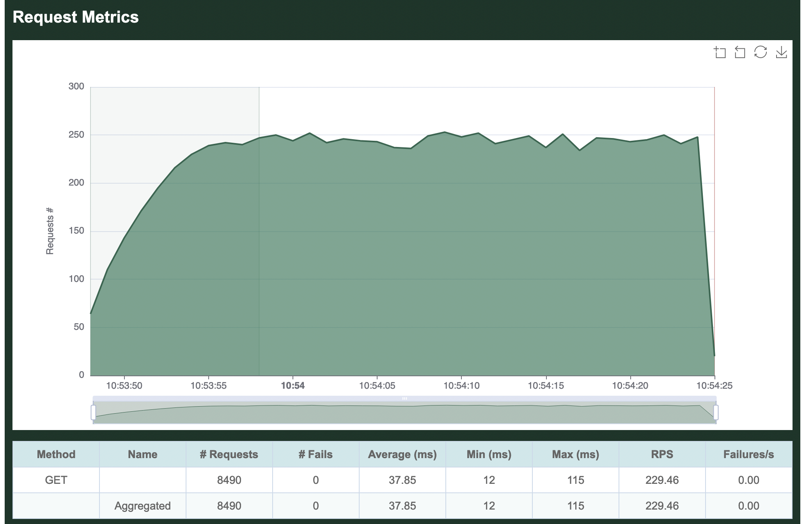
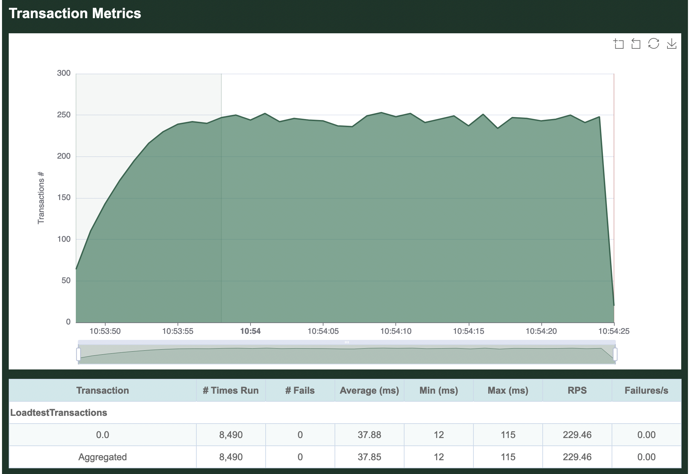
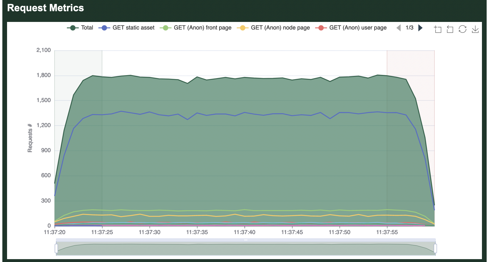
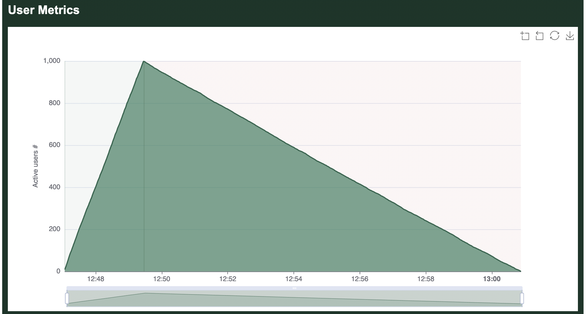
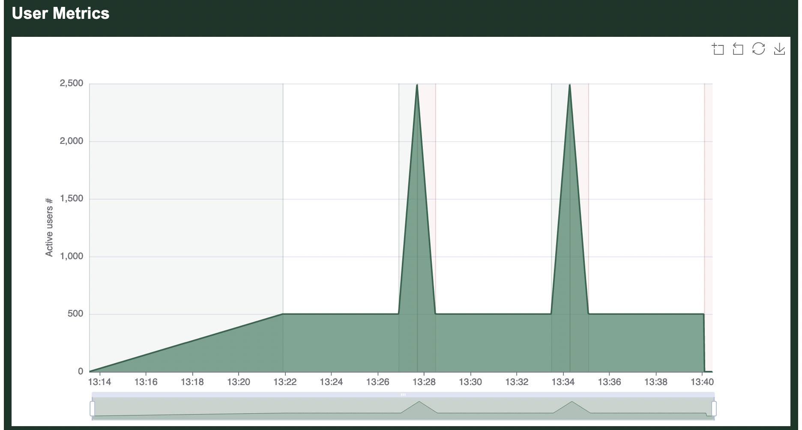

The Goose Book
Have you ever been attacked by a goose?
What Is Goose?
Goose is a Rust load testing tool inspired by Locust. User behavior is defined with standard Rust code. Load tests are applications that have a dependency on the Goose library. Web requests are made with the Reqwest HTTP Client.

Advantages
Goose generates at least 11x as much traffic as Locust per-CPU-core, with even larger gains for more complex load tests (such as those using third-party libraries to scrape form content). While Locust requires you to manage a distributed load test simply to use multiple CPU cores on a single server, Goose leverages all available CPU cores with a single process, drastically simplifying the process for running larger load tests. Ongoing improvements to the codebase continue to bring new features and faster performance. Goose scales far better than Locust, efficiently using available resources to accomplish its goal. It also supports asynchronous processes enabling many more simultaneous processes to ramp up thousands of users from a single server, easily and consistently.
Goose’s distributed testing design is similar to Locust’s, in that it uses a one Manager to many Workers model. However, unlike Locust, you do not need to spin up a distributed load test to leverage all available cores on a single server, as a single Goose process will fully leverage all available cores. Goose distributed load tests scale near-perfectly as once started each Worker performs its load test without any direction from the Manager, and the Manager simply collects statistics from all the Workers for final reporting. In other words, one Manager controlling eight Workers on a single 8-CPU-core server generates the same amount of load as a single standalone Goose process independently leveraging all eight cores.
Goose has a number of unique debugging and logging mechanisms not found in other load testing tools, simplifying the writing of load tests and the analysis of results. Goose also provides more comprehensive metrics with multiple simple views into the data, and makes it easy to confirm that the load test is doing what you expect it to as you scale it up or down. It exposes the algorithms used to allocate scenarios and contained transactions, giving more granular control over the order and consistency of operations, important for easily repeatable testing.
What's Missing
At this time, the biggest missing feature of Goose is a UI for controlling and monitoring load tests, but this is a work in progress. A recently completed first step toward this goal was the addition of an optional HTML report generated at the end of a load test.
Brought To You By
Goose development is sponsored by Tag1 Consulting, led by Tag1's CEO, Jeremy Andrews, along with many community contributions. Tag1 is a member of the Rust Foundation.
Additional Documentation
Requirements
-
In order to write load tests, you must first install Rust.
-
Goose load tests are managed with Cargo, the Rust package manager.
-
Goose requires a minimum
rustcversion of1.49.0or later. This is because Goose depends onflumefor communication between threads, which in turn depends onspinning_topwhich useshint::spin_loopwhich stabilized inrustcversion1.49.0. (See https://github.com/rust-lang/rust/issues/55002 for more detail.)
Glossary
GooseUser
A thread that repeatedly runs a single scenario for the duration of the load test.
Request
A single request based around HTTP verbs.
Scenario
A collection of steps or transactions a user would undertake to achieve a specific user journey.
Transaction
A transaction is a collection of one or more requests. For example, this may include loading the front page and all contained static assets, logging into the website, or adding one or more items to a shopping chart. Transactions typically include assertions or expectation validation.
Getting Started
This first chapter of the Goose Book provides a high-level overview of writing and running Goose load tests. If you're new to Goose, this is the place to start.
The Importance Of Load Testing
Load testing can help prevent website outages, stress test code changes, and identify bottlenecks. It can also quickly perform functional regression testing. The ability to run the same test repeatedly gives critical insight into the impact of changes to the code and/or systems.
Creating A Load Test
Cargo is the Rust package manager. To create a new load test, use Cargo to create a new application (you can name your application anything, we've generically selected loadtest):
$ cargo new loadtest
Created binary (application) `loadtest` package
$ cd loadtest/
This creates a new directory named loadtest/ containing loadtest/Cargo.toml and loadtest/src/main.rs. Edit Cargo.toml and add Goose and Tokio under the dependencies heading:
[dependencies]
goose = "^0.16"
tokio = "^1.12"
At this point it's possible to compile all dependencies, though the resulting binary only displays "Hello, world!":
$ cargo run
Updating crates.io index
Downloaded goose v0.16.0
...
Compiling goose v0.16.0
Compiling loadtest v0.1.0 (/home/jandrews/devel/rust/loadtest)
Finished dev [unoptimized + debuginfo] target(s) in 52.97s
Running `target/debug/loadtest`
Hello, world!
To create an actual load test, you first have to add the following boilerplate to the top of src/main.rs to make Goose's functionality available to your code:
use goose::prelude::*;
Note: Using the above prelude automatically adds the following
usestatements necessary when writing a load test, so you don't need to manually add all of them:use crate::config::{GooseDefault, GooseDefaultType}; use crate::goose::{ GooseMethod, GooseRequest, GooseUser, Scenario, Transaction, TransactionError, TransactionFunction, TransactionResult, ); use crate::metrics::{GooseCoordinatedOmissionMitigation, GooseMetrics}; use crate::{scenario, transaction, GooseAttack, GooseError, GooseScheduler};
Then create a new load testing function. For our example we're simply going to load the front page of the website we're load-testing. Goose passes all load testing functions a mutable pointer to a GooseUser object, which is used to track metrics and make web requests. Thanks to the Reqwest library, the Goose client manages things like cookies, headers, and sessions for you. Load testing functions must be declared async, ensuring that your simulated users don't become CPU-locked.
In load test functions you typically do not set the host, and instead configure the host at run time, so you can easily run your load test against different environments without recompiling. Relative paths (not starting with a /) should be used.
The following loadtest_index function simply loads the front page of our web page:
use goose::prelude::*;
async fn loadtest_index(user: &mut GooseUser) -> TransactionResult {
let _goose_metrics = user.get("").await?;
Ok(())
}
The function is declared async so that we don't block a CPU-core while loading web pages. All Goose load test functions are passed in a mutable reference to a GooseUser object, and return a TransactionResult which is either an empty Ok(()) on success, or a TransactionError on failure. We use the GooseUser object to make requests, in this case we make a GET request for the front page, specified with an empty path "". The .await frees up the CPU-core while we wait for the web page to respond, and the trailing ? unwraps the response, returning any unexpected errors that may be generated by this request.
When the GET request completes, Goose returns metrics which we store in the _goose_metrics variable. The variable is prefixed with an underscore (_) to tell the compiler we are intentionally not using the results. Finally, after making a single successful request, we return Ok(()) to let Goose know this transaction function completed successfully.
Now we have to tell Goose about our new transaction function. Edit the main() function, setting a return type and replacing the hello world text as follows:
#[tokio::main]
async fn main() -> Result<(), GooseError> {
GooseAttack::initialize()?
.register_scenario(scenario!("LoadtestTransactions")
.register_transaction(transaction!(loadtest_index))
)
.execute()
.await?;
Ok(())
}
The #[tokio::main] at the beginning of this example is a Tokio macro necessary because Goose is an asynchronous library, allowing (and requiring) us to declare the main() function of our load test application as async.
If you're new to Rust, main()'s return type of Result<(), GooseError> may look strange. It essentially says that main will return nothing (()) on success, and will return a GooseError on failure. This is helpful as several of GooseAttack's methods can fail, returning an error. In our example, initialize() and execute() each may fail. The ? that follows the method's name tells our program to exit and return an error on failure, otherwise continue on. Note that the .execute() method is asynchronous, so it must be followed with .await, and as it can return an error it alsos has a ?. The final line, Ok(()) returns the empty result expected on success.
And that's it, you've created your first load test! Read on to see how to run it and what it does.
Running A Load Test
We will use Cargo to run our example load test application. It's best to get in the habit of setting the --release option whenever compiling or running load tests.
$ cargo run --release
Finished release [optimized] target(s) in 0.06s
Running `target/release/loadtest`
07:08:43 [INFO] Output verbosity level: INFO
07:08:43 [INFO] Logfile verbosity level: WARN
07:08:43 [INFO] users defaulted to number of CPUs = 10
Error: InvalidOption { option: "--host", value: "", detail: "A host must be defined via the --host option, the GooseAttack.set_default() function, or the Scenario.set_host() function (no host defined for LoadtestTransactions)." }
The load test fails with an error as it hasn't been told the host you want to load test.
So, let's try again, this time passing in the --host flag. We will also add the --report-file flag, which will generate a HTML report, and --no-reset-metrics to preserve all information including the load test startup. The same information will also be printed to the command line (without graphs). After running for a few seconds, press ctrl-c one time to gracefully stop the load test:
% cargo run --release -- --host http://umami.ddev.site --report-file=report.html --no-reset-metrics
Finished release [optimized] target(s) in 0.06s
Running `target/release/loadtest --host 'http://umami.ddev.site' --report-file=report.html --no-reset-metrics`
08:53:48 [INFO] Output verbosity level: INFO
08:53:48 [INFO] Logfile verbosity level: WARN
08:53:48 [INFO] users defaulted to number of CPUs = 10
08:53:48 [INFO] no_reset_metrics = true
08:53:48 [INFO] report_file = report.html
08:53:48 [INFO] global host configured: http://umami.ddev.site
08:53:48 [INFO] allocating transactions and scenarios with RoundRobin scheduler
08:53:48 [INFO] initializing 10 user states...
08:53:48 [INFO] Telnet controller listening on: 0.0.0.0:5116
08:53:48 [INFO] WebSocket controller listening on: 0.0.0.0:5117
08:53:48 [INFO] entering GooseAttack phase: Increase
08:53:48 [INFO] launching user 1 from LoadtestTransactions...
08:53:49 [INFO] launching user 2 from LoadtestTransactions...
08:53:50 [INFO] launching user 3 from LoadtestTransactions...
08:53:51 [INFO] launching user 4 from LoadtestTransactions...
08:53:52 [INFO] launching user 5 from LoadtestTransactions...
08:53:53 [INFO] launching user 6 from LoadtestTransactions...
08:53:54 [INFO] launching user 7 from LoadtestTransactions...
08:53:55 [INFO] launching user 8 from LoadtestTransactions...
08:53:56 [INFO] launching user 9 from LoadtestTransactions...
08:53:57 [INFO] launching user 10 from LoadtestTransactions...
All 10 users hatched.
08:53:58 [INFO] entering GooseAttack phase: Maintain
^C08:54:25 [WARN] caught ctrl-c, stopping...
As of Goose 0.16.0, by default all INFO and higher level log messages are displayed on the console while the load test runs. You can disable these messages with the -q (--quiet) flag. Or, you can display low-level debug with the -v (--verbose) flag.
When the load tests finishes shutting down, it will display some ASCII metrics on the CLI and an HTML report will be created in the local directory named report.html as was configured above. The graphs and tables found in the HTML report are what are demonstrated below:

By default, Goose will hatch 1 GooseUser per second, up to the number of CPU cores available on the server used for load testing. In the above example, the loadtest was run from a laptop with 10 CPU cores, so it took 10 seconds to hatch all users.
By default, after all users are launched Goose will flush all metrics collected during the launching process (we used the --no-reset-metrics flag to disable this behavior) so the summary metrics are collected with all users running. If we'd not used --no-reset-metrics, before flushing the metrics they would have been displayed to the console so the data is not lost.

The per-request metrics are displayed first. Our single transaction makes a GET request for the empty "" path, so it shows up in the metrics as simply GET . The table in this section displays shows the total number of requests made (8,490), the average number of requests per second (229.46), and the average number of failed requests per second (0).
Additionally it shows the average time required to load a page (37.85 milliseconds), the minimum time to load a page (12 ms) and the maximum time to load a page (115 ms).
If our load test made multiple requests, the Aggregated line at the bottom of this section would show totals and averages of all requests together. Because we only make a single request, this row is identical to the per-request metrics.

The second section displays the average time required to load a page. The table in this section is showing the slowest page load time for a range of percentiles. In our example, in the 50% fastest page loads, the slowest page loaded in 37 ms. In the 70% fastest page loads, the slowest page loaded in 42 ms, etc. The graph, on the other hand, is displaying the average response time aggregated across all requests.

The third section is a table showing all response codes received for each request. In this simple example, all 8,490 requests received a 200 OK response.

Next comes per-transaction metrics, starting with the name of our Scenario, LoadtestTransactions. Individual transactions in the Scenario are then listed in the order they are defined in our load test. We did not name our transaction, so it simply shows up as 0.0. All defined transactions will be listed here, even if they did not run, so this can be useful to confirm everything in your load test is running as expected. Comparing the transaction metrics metrics collected for 0.0 to the per-request metrics collected for GET /, you can see that they are the same. This is because in our simple example, our single transaction only makes one request.
In real load tests, you'll most likely have multiple scenarios each with multiple transactions, and Goose will show you metrics for each along with an aggregate of them all together.

Finally comes a chart showing how many users were running during the load test. You can clearly see the 10 users starting 1 per second at the start of the load test, as well as the final second when users quickly stopped.
Refer to the examples included with Goose for more complicated and useful load test examples.
Run-Time Options
The -h flag will show all run-time configuration options available to Goose load tests. For example, you can pass the -h flag to our example loadtest as follows, cargo run --release -- -h:
Usage: target/release/loadtest [OPTIONS]
Runtime options available when launching a Goose load test.
Optional arguments:
-h, --help Displays this help
-V, --version Prints version information
-l, --list Lists all transactions and exits
-H, --host HOST Defines host to load test (ie http://10.21.32.33)
-u, --users USERS Sets concurrent users (default: number of CPUs)
-r, --hatch-rate RATE Sets per-second user hatch rate (default: 1)
-s, --startup-time TIME Starts users for up to (30s, 20m, 3h, 1h30m, etc)
-t, --run-time TIME Stops load test after (30s, 20m, 3h, 1h30m, etc)
-G, --goose-log NAME Enables Goose log file and sets name
-g, --log-level Inreases Goose log level (-g, -gg, etc)
-q, --quiet Decreases Goose verbosity (-q, -qq, etc)
-v, --verbose Increases Goose verbosity (-v, -vv, etc)
Metrics:
--running-metrics TIME How often to optionally print running metrics
--no-reset-metrics Doesn't reset metrics after all users have started
--no-metrics Doesn't track metrics
--no-transaction-metrics Doesn't track transaction metrics
--no-print-metrics Doesn't display metrics at end of load test
--no-error-summary Doesn't display an error summary
--report-file NAME Create an html-formatted report
--no-granular-report Disable granular graphs in report file
-R, --request-log NAME Sets request log file name
--request-format FORMAT Sets request log format (csv, json, raw, pretty)
--request-body Include the request body in the request log
-T, --transaction-log NAME Sets transaction log file name
--transaction-format FORMAT Sets log format (csv, json, raw, pretty)
-E, --error-log NAME Sets error log file name
--error-format FORMAT Sets error log format (csv, json, raw, pretty)
-D, --debug-log NAME Sets debug log file name
--debug-format FORMAT Sets debug log format (csv, json, raw, pretty)
--no-debug-body Do not include the response body in the debug log
--no-status-codes Do not track status code metrics
Advanced:
--test-plan "TESTPLAN" Defines a more complex test plan ("10,60;0,30")
--no-telnet Doesn't enable telnet Controller
--telnet-host HOST Sets telnet Controller host (default: 0.0.0.0)
--telnet-port PORT Sets telnet Controller TCP port (default: 5116)
--no-websocket Doesn't enable WebSocket Controller
--websocket-host HOST Sets WebSocket Controller host (default: 0.0.0.0)
--websocket-port PORT Sets WebSocket Controller TCP port (default: 5117)
--no-autostart Doesn't automatically start load test
--no-gzip Doesn't set the gzip Accept-Encoding header
--timeout VALUE Sets per-request timeout, in seconds (default: 60)
--co-mitigation STRATEGY Sets coordinated omission mitigation strategy
--throttle-requests VALUE Sets maximum requests per second
--sticky-follow Follows base_url redirect with subsequent requests
Gaggle:
--manager Enables distributed load test Manager mode
--expect-workers VALUE Sets number of Workers to expect
--no-hash-check Tells Manager to ignore load test checksum
--manager-bind-host HOST Sets host Manager listens on (default: 0.0.0.0)
--manager-bind-port PORT Sets port Manager listens on (default: 5115)
--worker Enables distributed load test Worker mode
--manager-host HOST Sets host Worker connects to (default: 127.0.0.1)
--manager-port PORT Sets port Worker connects to (default: 5115)
All of the above configuration options are defined in the developer documentation.
Common Run Time Options
As seen on the previous page, Goose has a lot of run time options which can be overwhelming. The following are a few of the more common and more important options to be familiar with. In these examples we only demonstrate one option at a time, but it's generally useful to combine many options.
Host to load test
Load test plans typically contain relative paths, and so Goose must be told which host to run the load test against in order for it to start. This allows a single load test plan to be used for testing different environments, for example "http://local.example.com", "https://qa.example.com", and "https://www.example.com".
Example
Load test the https://www.example.com domain.
cargo run --release -- -H https://www.example.com
How many users to simulate
By default, Goose will launch one user per available CPU core. Often you will want to simulate considerably more users than this, and this can be done by setting the "--user" run time option.
Example
Launch 1,000 GooseUsers.
cargo run --release -- -u 1000
Controlling how long it takes Goose to launch all users
There are two ways to configure how long Goose will take to launch all configured GooseUsers. You can user either --hatch-rate or --startup-time, but not both together.
Specifying the hatch rate
By default, Goose starts one GooseUser per second. So if you configure --users to 10 it will take ten seconds to fully start the load test. If you set --hatch-rate 5 then Goose will start 5 users every second, taking two seconds to start up. If you set --hatch-rate 0.5 then Goose will start 1 user every 2 seconds, taking twenty seconds to start all 10 users.
Example
Launch one user every two seconds.
cargo run --release -- -r .5
Specifying the total startup time
Alternatively, you can tell Goose how long you'd like it to take to start all GooseUsers. So, if you configure --users to 10 and set --startup-time 10 it will launch 1 user every second. If you set --startup-time 1m it will start 1 user every 6 seconds, starting all users over one minute. And if you set --startup-time 2s it will launch five users per second, launching all users in two seconds.
Example
Launch all users in 5 seconds.
cargo run --release -- -s 5
Specifying how long the load test will run
The --run-time option is not affected by how long Goose takes to start up. Thus, if you configure a load test with --users 100 --startup-time 30m --run-time 5m Goose will run for a total of 35 minutes, first ramping up for 30 minutes and then running at full load for 5 minutes. If you want Goose to exit immediately after all users start, you can set a very small run time, for example --users 100 --hatch-rate .25 --run-time 1s.
If you do not configure a run time, Goose will run until it's canceled with ctrl-c.
Example
Run the load test for 30 minutes.
cargo run --release -- -t 30m
Writing An HTML-formatted Report
By default, Goose displays text-formatted metrics when a load test finishes. It can also optionally write an HTML-formatted report if you enable the --report-file <NAME> run-time option, where <NAME> is an absolute or relative path to the report file to generate. Any file that already exists at the specified path will be overwritten.
The HTML report includes some graphs that rely on the eCharts JavaScript library. The HTML report loads the library via CDN, which means that the graphs won't be loaded correctly if the CDN is not accessible.

Example
Write an HTML-formatted report to report.html when the load test finishes.
cargo run --release -- --report-file report.html
Test Plan
A load test that ramps up to full strength and then runs for a set amount of time can be configured by combining the --startup-time or --hatch-rate options together with the --users and --run-time options. For more complex load patterns you must instead use the --test-plan option.
A test plan is defined as a series of numerical pairs that each defines a number of users, and a number of seconds to ramp to this number of users. For example, "10,60" means "launch 10 users over 60 seconds". By stringing together multiple pairs separated by a semicolon you can define more complex test plans. For example, "10,1m;10,5m;0,0" means "launch 10 users over 1 minute, continue with 10 users for 5 minutes, then shut down the load test as quickly as possible".
Simple Example
The following command tells Goose to start 10 users over 60 seconds and then to run for 5 minutes before shutting down:
$ cargo run --release -- -H http://local.dev/ --startup-time 1m --users 10 --run-time 5m --no-reset-metrics
The exact same behaviour can be defined with the following test plan:
$ cargo run --release -- -H http://local.dev/ --test-plan "10,1m;10,5m;0,0"

Ramp Down Example
Goose will stop a load test as quickly as it can when the specified --run-time completes. To instead configure a load test to ramp down slowly you can use a test plan. In the following example, Goose starts 1000 users in 2 minutes and then slowly stops them over 500 seconds (stopping 2 users per second):
$ cargo run --release -- -H http://local.dev/ --test-plan "1000,2m;0,500"

Load Spike Example
Another possibility when specifying a test plan is to add load spikes into otherwise steady load. For example, in the following example Goose starts 500 users over 5 minutes and lets it run with a couple of traffic spikes to 2,500 users:
$ cargo run --release -- -H http://local.dev/ --test-plan "500,5m;500,5m;2500,45;500,45;500,5m;2500,45;500,45;500,5m;0,0"

Internals
Internally, Goose converts the test plan into a vector of usize tuples, Vec<(usize, usize)>, where the first integer reflects the number of users to be running and the second integer reflects the time in milliseconds. You can see the internal representation when you start a load test, for example:
% cargo run --release --example simple -- --no-autostart --test-plan "100,30;100,1h" | grep test_plan
13:54:35 [INFO] test_plan = GooseTestPlan { test_plan: [(100, 30000), (100, 3600000)] }
Throttling Requests
By default, Goose will generate as much load as it can. If this is not desirable, the throttle allows optionally limiting the maximum number of requests per second made during a load test. This can be helpful to ensure consistency when running a load test from multiple different servers with different available resources.
The throttle is specified as an integer and imposes a maximum number of requests, not a minimum number of requests.
Example
In this example, Goose will launch 100 GooseUser threads, but the throttle will prevent them from generating a combined total of more than 5 requests per second.
$ cargo run --release -- -H http://local.dev/ -u100 -r20 --throttle-requests 5

Metrics
Here's sample output generated when running a loadtest, in this case the Umami example that comes with Goose.
In this case, the Drupal Umami demo was installed in a local container. The following command was used to configure Goose and run the load test. The -u9 tells Goose to spin up 9 users. The -r3 option tells Goose to hatch 3 users per second. The -t1m option tells Goose to run the load test for 1 minute, or 60 seconds. The --no-reset-metrics flag tells Goose to include all metrics, instead of the default which is to flush all metrics collected during start up. And finally, the --report-file report.html tells Goose to generate an HTML-formatted report named report.html once the load test finishes.
% cargo run --release --example umami -- --host http://umami.ddev.site/ -u9 -r3 -t1m --no-reset-metrics --report-file report.html
Finished release [optimized] target(s) in 0.11s
Running `target/release/examples/umami --host 'http://umami.ddev.site/' -u9 -r3 -t1m --no-reset-metrics --report-file report.html`
08:21:31 [INFO] Output verbosity level: INFO
08:21:31 [INFO] Logfile verbosity level: WARN
08:21:31 [INFO] users = 9
08:21:31 [INFO] run_time = 60
08:21:31 [INFO] hatch_rate = 3
08:21:31 [INFO] no_reset_metrics = true
08:21:31 [INFO] report_file = report.html
08:21:31 [INFO] global host configured: http://umami.ddev.site/
08:21:31 [INFO] allocating transactions and scenarios with RoundRobin scheduler
08:21:31 [INFO] initializing 9 user states...
08:21:31 [INFO] Telnet controller listening on: 0.0.0.0:5116
08:21:31 [INFO] WebSocket controller listening on: 0.0.0.0:5117
08:21:31 [INFO] entering GooseAttack phase: Increase
08:21:31 [INFO] launching user 1 from Anonymous Spanish user...
08:21:31 [INFO] launching user 2 from Anonymous English user...
08:21:31 [INFO] launching user 3 from Anonymous Spanish user...
08:21:32 [INFO] launching user 4 from Anonymous English user...
08:21:32 [INFO] launching user 5 from Anonymous Spanish user...
08:21:32 [INFO] launching user 6 from Anonymous English user...
08:21:33 [INFO] launching user 7 from Admin user...
08:21:33 [INFO] launching user 8 from Anonymous Spanish user...
08:21:33 [INFO] launching user 9 from Anonymous English user...
All 9 users hatched.
08:21:34 [INFO] entering GooseAttack phase: Maintain
08:22:34 [INFO] entering GooseAttack phase: Decrease
08:22:34 [INFO] exiting user 4 from Anonymous English user...
08:22:34 [INFO] exiting user 7 from Admin user...
08:22:34 [INFO] exiting user 8 from Anonymous Spanish user...
08:22:34 [INFO] exiting user 3 from Anonymous Spanish user...
08:22:34 [INFO] exiting user 9 from Anonymous English user...
08:22:34 [INFO] exiting user 1 from Anonymous Spanish user...
08:22:34 [INFO] exiting user 2 from Anonymous English user...
08:22:34 [INFO] exiting user 6 from Anonymous English user...
08:22:34 [INFO] exiting user 5 from Anonymous Spanish user...
08:22:34 [INFO] wrote html report file to: report.html
08:22:34 [INFO] entering GooseAttack phase: Shutdown
08:22:34 [INFO] printing final metrics after 60 seconds...
=== PER TRANSACTION METRICS ===
------------------------------------------------------------------------------
Name | # times run | # fails | trans/s | fail/s
------------------------------------------------------------------------------
1: Anonymous English user |
1: anon / | 21 | 0 (0%) | 0.35 | 0.00
2: anon /en/basicpage | 12 | 0 (0%) | 0.20 | 0.00
3: anon /en/articles/ | 11 | 0 (0%) | 0.18 | 0.00
4: anon /en/articles/% | 19 | 0 (0%) | 0.32 | 0.00
5: anon /en/recipes/ | 11 | 0 (0%) | 0.18 | 0.00
6: anon /en/recipes/% | 35 | 0 (0%) | 0.58 | 0.00
7: anon /node/%nid | 11 | 0 (0%) | 0.18 | 0.00
8: anon /en term | 18 | 0 (0%) | 0.30 | 0.00
9: anon /en/search | 10 | 0 (0%) | 0.17 | 0.00
10: anon /en/contact | 9 | 0 (0%) | 0.15 | 0.00
2: Anonymous Spanish user |
1: anon /es/ | 24 | 0 (0%) | 0.40 | 0.00
2: anon /es/basicpage | 12 | 0 (0%) | 0.20 | 0.00
3: anon /es/articles/ | 12 | 0 (0%) | 0.20 | 0.00
4: anon /es/articles/% | 23 | 0 (0%) | 0.38 | 0.00
5: anon /es/recipes/ | 12 | 0 (0%) | 0.20 | 0.00
6: anon /es/recipes/% | 40 | 0 (0%) | 0.67 | 0.00
7: anon /es term | 21 | 0 (0%) | 0.35 | 0.00
8: anon /es/search | 11 | 0 (0%) | 0.18 | 0.00
9: anon /es/contact | 11 | 0 (0%) | 0.18 | 0.00
3: Admin user |
1: auth /en/user/login | 1 | 0 (0%) | 0.02 | 0.00
2: auth / | 4 | 0 (0%) | 0.07 | 0.00
3: auth /en/articles/ | 2 | 0 (0%) | 0.03 | 0.00
4: auth /en/node/%/e.. | 4 | 0 (0%) | 0.07 | 0.00
-------------------------+---------------+----------------+----------+--------
Aggregated | 334 | 0 (0%) | 5.57 | 0.00
------------------------------------------------------------------------------
Name | Avg (ms) | Min | Max | Median
------------------------------------------------------------------------------
1: Anonymous English user |
1: anon / | 117.38 | 88 | 199 | 110
2: anon /en/basicpage | 59.08 | 39 | 102 | 49
3: anon /en/articles/ | 129.82 | 92 | 216 | 110
4: anon /en/articles/% | 135.79 | 72 | 199 | 150
5: anon /en/recipes/ | 161.45 | 112 | 275 | 140
6: anon /en/recipes/% | 65.97 | 44 | 105 | 60
7: anon /node/%nid | 104.27 | 45 | 208 | 71
8: anon /en term | 146.72 | 70 | 221 | 140
9: anon /en/search | 241.40 | 194 | 292 | 230
10: anon /en/contact | 211.89 | 186 | 250 | 210
2: Anonymous Spanish user |
1: anon /es/ | 123.58 | 89 | 240 | 110
2: anon /es/basicpage | 59.58 | 45 | 85 | 58
3: anon /es/articles/ | 129.17 | 88 | 211 | 110
4: anon /es/articles/% | 151.26 | 71 | 262 | 160
5: anon /es/recipes/ | 158.83 | 107 | 222 | 150
6: anon /es/recipes/% | 59.42 | 47 | 89 | 53
7: anon /es term | 143.76 | 52 | 207 | 140
8: anon /es/search | 288.82 | 233 | 415 | 270
9: anon /es/contact | 233.91 | 192 | 291 | 230
3: Admin user |
1: auth /en/user/login | 316.00 | 316 | 316 | 316
2: auth / | 241.75 | 223 | 277 | 230
3: auth /en/articles/ | 235.50 | 221 | 250 | 221
4: auth /en/node/%/e.. | 807.25 | 695 | 877 | 695
-------------------------+-------------+------------+-------------+-----------
Aggregated | 138.09 | 39 | 877 | 110
=== PER REQUEST METRICS ===
------------------------------------------------------------------------------
Name | # reqs | # fails | req/s | fail/s
------------------------------------------------------------------------------
GET anon / | 21 | 0 (0%) | 0.35 | 0.00
GET anon /en term | 18 | 0 (0%) | 0.30 | 0.00
GET anon /en/articles/ | 11 | 0 (0%) | 0.18 | 0.00
GET anon /en/articles/% | 19 | 0 (0%) | 0.32 | 0.00
GET anon /en/basicpage | 12 | 0 (0%) | 0.20 | 0.00
GET anon /en/contact | 9 | 0 (0%) | 0.15 | 0.00
GET anon /en/recipes/ | 11 | 0 (0%) | 0.18 | 0.00
GET anon /en/recipes/% | 35 | 0 (0%) | 0.58 | 0.00
GET anon /en/search | 10 | 0 (0%) | 0.17 | 0.00
GET anon /es term | 21 | 0 (0%) | 0.35 | 0.00
GET anon /es/ | 24 | 0 (0%) | 0.40 | 0.00
GET anon /es/articles/ | 12 | 0 (0%) | 0.20 | 0.00
GET anon /es/articles/% | 23 | 0 (0%) | 0.38 | 0.00
GET anon /es/basicpage | 12 | 0 (0%) | 0.20 | 0.00
GET anon /es/contact | 11 | 0 (0%) | 0.18 | 0.00
GET anon /es/recipes/ | 12 | 0 (0%) | 0.20 | 0.00
GET anon /es/recipes/% | 40 | 0 (0%) | 0.67 | 0.00
GET anon /es/search | 11 | 0 (0%) | 0.18 | 0.00
GET anon /node/%nid | 11 | 0 (0%) | 0.18 | 0.00
GET auth / | 4 | 0 (0%) | 0.07 | 0.00
GET auth /en/articles/ | 2 | 0 (0%) | 0.03 | 0.00
GET auth /en/node/%/edit | 8 | 0 (0%) | 0.13 | 0.00
GET auth /en/user/login | 1 | 0 (0%) | 0.02 | 0.00
GET static asset | 3,574 | 0 (0%) | 59.57 | 0.00
POST anon /en/contact | 9 | 0 (0%) | 0.15 | 0.00
POST anon /en/search | 10 | 0 (0%) | 0.17 | 0.00
POST anon /es/contact | 11 | 0 (0%) | 0.18 | 0.00
POST anon /es/search | 11 | 0 (0%) | 0.18 | 0.00
POST auth /en/node/%/e.. | 4 | 0 (0%) | 0.07 | 0.00
POST auth /en/user/login | 1 | 0 (0%) | 0.02 | 0.00
-------------------------+---------------+----------------+----------+--------
Aggregated | 3,958 | 0 (0%) | 65.97 | 0.00
------------------------------------------------------------------------------
Name | Avg (ms) | Min | Max | Median
------------------------------------------------------------------------------
GET anon / | 35.76 | 14 | 121 | 18
GET anon /en term | 108.50 | 28 | 178 | 100
GET anon /en/articles/ | 49.09 | 17 | 130 | 24
GET anon /en/articles/% | 80.21 | 21 | 132 | 97
GET anon /en/basicpage | 27.75 | 16 | 62 | 19
GET anon /en/contact | 22.89 | 16 | 29 | 22
GET anon /en/recipes/ | 58.36 | 17 | 140 | 29
GET anon /en/recipes/% | 30.17 | 15 | 62 | 24
GET anon /en/search | 35.40 | 17 | 89 | 24
GET anon /es term | 107.71 | 17 | 168 | 98
GET anon /es/ | 40.04 | 17 | 148 | 22
GET anon /es/articles/ | 48.75 | 16 | 130 | 25
GET anon /es/articles/% | 94.43 | 21 | 184 | 100
GET anon /es/basicpage | 28.58 | 18 | 55 | 24
GET anon /es/contact | 22.55 | 16 | 47 | 19
GET anon /es/recipes/ | 53.92 | 16 | 123 | 27
GET anon /es/recipes/% | 23.30 | 17 | 47 | 19
GET anon /es/search | 68.64 | 18 | 114 | 70
GET anon /node/%nid | 56.73 | 17 | 140 | 23
GET auth / | 133.25 | 121 | 160 | 130
GET auth /en/articles/ | 134.50 | 120 | 149 | 120
GET auth /en/node/%/edit | 123.88 | 46 | 188 | 110
GET auth /en/user/login | 33.00 | 33 | 33 | 33
GET static asset | 4.91 | 2 | 26 | 5
POST anon /en/contact | 120.00 | 107 | 151 | 110
POST anon /en/search | 141.90 | 115 | 161 | 140
POST anon /es/contact | 144.18 | 106 | 205 | 140
POST anon /es/search | 159.36 | 116 | 228 | 160
POST auth /en/node/%/e.. | 308.25 | 291 | 345 | 300
POST auth /en/user/login | 169.00 | 169 | 169 | 169
-------------------------+-------------+------------+-------------+-----------
Aggregated | 11.00 | 2 | 345 | 5
------------------------------------------------------------------------------
Slowest page load within specified percentile of requests (in ms):
------------------------------------------------------------------------------
Name | 50% | 75% | 98% | 99% | 99.9% | 99.99%
------------------------------------------------------------------------------
GET anon / | 18 | 35 | 120 | 120 | 120 | 120
GET anon /en term | 100 | 130 | 178 | 178 | 178 | 178
GET anon /en/articles/ | 24 | 58 | 130 | 130 | 130 | 130
GET anon /en/articles/% | 97 | 100 | 130 | 130 | 130 | 130
GET anon /en/basicpage | 19 | 30 | 62 | 62 | 62 | 62
GET anon /en/contact | 22 | 28 | 29 | 29 | 29 | 29
GET anon /en/recipes/ | 29 | 93 | 140 | 140 | 140 | 140
GET anon /en/recipes/% | 24 | 37 | 61 | 62 | 62 | 62
GET anon /en/search | 24 | 33 | 89 | 89 | 89 | 89
GET anon /es term | 98 | 130 | 168 | 168 | 168 | 168
GET anon /es/ | 22 | 35 | 148 | 148 | 148 | 148
GET anon /es/articles/ | 25 | 51 | 130 | 130 | 130 | 130
GET anon /es/articles/% | 100 | 120 | 180 | 180 | 180 | 180
GET anon /es/basicpage | 24 | 30 | 55 | 55 | 55 | 55
GET anon /es/contact | 19 | 21 | 47 | 47 | 47 | 47
GET anon /es/recipes/ | 27 | 100 | 120 | 120 | 120 | 120
GET anon /es/recipes/% | 19 | 25 | 43 | 47 | 47 | 47
GET anon /es/search | 70 | 99 | 110 | 110 | 110 | 110
GET anon /node/%nid | 23 | 89 | 140 | 140 | 140 | 140
GET auth / | 130 | 130 | 160 | 160 | 160 | 160
GET auth /en/articles/ | 120 | 149 | 149 | 149 | 149 | 149
GET auth /en/node/%/edit | 110 | 170 | 188 | 188 | 188 | 188
GET auth /en/user/login | 33 | 33 | 33 | 33 | 33 | 33
GET static asset | 5 | 6 | 10 | 11 | 20 | 26
POST anon /en/contact | 110 | 130 | 150 | 150 | 150 | 150
POST anon /en/search | 140 | 160 | 160 | 160 | 160 | 160
POST anon /es/contact | 140 | 160 | 205 | 205 | 205 | 205
POST anon /es/search | 160 | 160 | 228 | 228 | 228 | 228
POST auth /en/node/%/e.. | 300 | 300 | 345 | 345 | 345 | 345
POST auth /en/user/login | 169 | 169 | 169 | 169 | 169 | 169
-------------------------+--------+--------+--------+--------+--------+-------
Aggregated | 5 | 6 | 120 | 140 | 230 | 345
------------------------------------------------------------------------------
Name | Status codes
------------------------------------------------------------------------------
GET anon / | 21 [200]
GET anon /en term | 18 [200]
GET anon /en/articles/ | 11 [200]
GET anon /en/articles/% | 19 [200]
GET anon /en/basicpage | 12 [200]
GET anon /en/contact | 9 [200]
GET anon /en/recipes/ | 11 [200]
GET anon /en/recipes/% | 35 [200]
GET anon /en/search | 10 [200]
GET anon /es term | 21 [200]
GET anon /es/ | 24 [200]
GET anon /es/articles/ | 12 [200]
GET anon /es/articles/% | 23 [200]
GET anon /es/basicpage | 12 [200]
GET anon /es/contact | 11 [200]
GET anon /es/recipes/ | 12 [200]
GET anon /es/recipes/% | 40 [200]
GET anon /es/search | 11 [200]
GET anon /node/%nid | 11 [200]
GET auth / | 4 [200]
GET auth /en/articles/ | 2 [200]
GET auth /en/node/%/edit | 8 [200]
GET auth /en/user/login | 1 [200]
GET static asset | 3,574 [200]
POST anon /en/contact | 9 [200]
POST anon /en/search | 10 [200]
POST anon /es/contact | 11 [200]
POST anon /es/search | 11 [200]
POST auth /en/node/%/e.. | 4 [200]
POST auth /en/user/login | 1 [200]
-------------------------+----------------------------------------------------
Aggregated | 3,958 [200]
=== OVERVIEW ===
------------------------------------------------------------------------------
Action Started Stopped Elapsed Users
------------------------------------------------------------------------------
Increasing: 2022-04-28 10:21:31 - 2022-04-28 10:21:34 (00:00:03, 0 -> 9)
Maintaining: 2022-04-28 10:21:34 - 2022-04-28 10:22:34 (00:01:00, 9)
Decreasing: 2022-04-28 10:22:34 - 2022-04-28 10:22:34 (00:00:00, 0 <- 9)
Target host: http://umami.ddev.site/
goose v0.16.0
------------------------------------------------------------------------------
In addition to the above metrics displayed on the CLI, we've also told Goose to create an HTML report. The report starts with a brief overview, offering the same information found in the text overview above:

Next the report includes a graph of all requests made during the duration of the load test. By default, the graph includes an aggregated average, as well as per-request details. It's possible to click on the request names at the top of the graph hide/show specific requests on the graphs. In this case, the graph shows that most requests made by the load test were for static assets.
Below the graph is a table that shows per-request details, only partially included in this screenshot:

The next graph shows the response times measured for each request made. In the following graph, it's apparent that POST requests had the slowest responses, which is logical as they are not cached.
Again, below the graph is a table that shows per-request details:

All requests made by Goose are grouped inside Transactions. The next graph shows all Transactions made during the load test, where each Transaction is a collection of some of the above requests. For example, the Transaction named 0.0 anon / includes an anonymous (not-logged-in) request for the front page, as well as requests for all static assets found on the front page. It is also followed by a table, partially shown here:

Goose also records all status codes returned by the server, and displays them per-request. In our simple test, all we received were 200 OK responses:

The final graph shows how many users were running at the various stages of the load test. As configured, Goose quickly ramped up to 9 users, then sustained that level of traffic for a minute before shutting down:

Additional details about how metrics are collected, stored, and displayed can be found in the developer documentation.
Tips
Best Practices
- When writing load tests, avoid
unwrap()(and variations) in your transaction functions -- Goose generates a lot of load, and this tends to trigger errors. Embrace Rust's warnings and properly handle all possible errors, this will save you time debugging later. - When running your load test, use the cargo
--releaseflag to generate optimized code. This can generate considerably more load test traffic. Learn more about this and other optimizations in "The golden Goose egg, a compile-time adventure".
Errors
Timeouts
By default, Goose will time out requests that take longer than 60 seconds to return, and display a WARN level message saying, "operation timed out". For example:
11:52:17 [WARN] "/node/3672": error sending request for url (http://apache/node/3672): operation timed out
These will also show up in the error summary displayed with the final metrics. For example:
=== ERRORS ===
------------------------------------------------------------------------------
Count | Error
------------------------------------------------------------------------------
51 GET (Auth) comment form: error sending request (Auth) comment form: operation timed out
To change how long before requests time out, use --timeout VALUE when starting a load test, for example --timeout 30 will time out requests that take longer than 30 seconds to return. To configure the timeout programatically, use .set_default() to set GooseDefault::Timeout.
To completely disable timeouts, you must build a custom Reqwest Client with GooseUser::set_client_builder. Alternatively, you can just set a very high timeout, for example --timeout 86400 will let a request take up to 24 hours.
Logging
With logging, it's possible to record all Goose activity. This can be useful for debugging errors, for validating the load test, and for creating graphs.
When logging is enabled, a central logging thread maintains a buffer to minimize the IO overhead, and controls the writing to ensure that multiple threads don't corrupt each other's messages. All log messages are sent through a channel to the logging thread and written asynchronously, minimizing the impact on the load test.
Request Log
Goose can optionally log details about all the requests made during the load test to a file. This log file contains the running metrics Goose generates as the load test runs. To enable, add the --request-log <request.log> command line option, where <request.log> is either a relative or absolute path of the log file to create. Any existing file that may already exist will be overwritten.
If --request-body is also enabled, the request log will include the entire body of any client requests.
Logs include the entire GooseRequestMetric object which also includes the entire GooseRawRequest object, both created for all client requests.
Log Format
By default, logs are written in JSON Lines format. For example (in this case with --request-body also enabled):
{"coordinated_omission_elapsed":0,"elapsed":13219,"error":"","final_url":"http://apache/misc/jquery-extend-3.4.0.js?v=1.4.4","name":"static asset","raw":{"body":"","headers":[],"method":"Get","url":"http://apache/misc/jquery-extend-3.4.0.js?v=1.4.4"},"redirected":false,"response_time":7,"status_code":200,"success":true,"update":false,"user":4,"user_cadence":0}
{"coordinated_omission_elapsed":0,"elapsed":13055,"error":"","final_url":"http://apache/node/1786#comment-114852","name":"(Auth) comment form","raw":{"body":"subject=this+is+a+test+comment+subject&comment_body%5Bund%5D%5B0%5D%5Bvalue%5D=this+is+a+test+comment+body&comment_body%5Bund%5D%5B0%5D%5Bformat%5D=filtered_html&form_build_id=form-U0L3wm2SsIKAhVhaHpxeL1TLUHW64DXKifmQeZsUsss&form_token=VKDel_jiYzjqPrekL1FrP2_4EqHTlsaqLjMUJ6pn-sE&form_id=comment_node_article_form&op=Save","headers":["(\"content-type\", \"application/x-www-form-urlencoded\")"],"method":"Post","url":"http://apache/comment/reply/1786"},"redirected":true,"response_time":172,"status_code":200,"success":true,"update":false,"user":1,"user_cadence":0}
{"coordinated_omission_elapsed":0,"elapsed":13219,"error":"","final_url":"http://apache/misc/drupal.js?q9apdy","name":"static asset","raw":{"body":"","headers":[],"method":"Get","url":"http://apache/misc/drupal.js?q9apdy"},"redirected":false,"response_time":7,"status_code":200,"success":true,"update":false,"user":0,"user_cadence":0}
The --request-format option can be used to log in csv, json (default), raw or pretty format. The raw format is Rust's debug output of the entire GooseRequestMetric object.
Gaggle Mode
When operating in Gaggle-mode, the --request-log option can only be enabled on the Worker processes, configuring Goose to spread out the overhead of writing logs.
Transaction Log
Goose can optionally log details about each time a transaction is run during a load test. To enable, add the --transaction-log <transaction.log> command line option, where <transaction.log> is either a relative or absolute path of the log file to create. Any existing file that may already exist will be overwritten.
Logs include the entire TransactionMetric object which is created each time any transaction is run.
Log Format
By default, logs are written in JSON Lines format. For example:
{"elapsed":22060,"name":"(Anon) front page","run_time":97,"success":true,"transaction_index":0,"scenario_index":0,"user":0}
{"elapsed":22118,"name":"(Anon) node page","run_time":41,"success":true,"transaction_index":1,"scenario_index":0,"user":5}
{"elapsed":22157,"name":"(Anon) node page","run_time":6,"success":true,"transaction_index":1,"scenario_index":0,"user":0}
{"elapsed":22078,"name":"(Auth) front page","run_time":109,"success":true,"transaction_index":1,"scenario_index":1,"user":6}
{"elapsed":22157,"name":"(Anon) user page","run_time":35,"success":true,"transaction_index":2,"scenario_index":0,"user":4}
In the first line of the above example, GooseUser thread 0 succesfully ran the (Anon) front page transaction in 97 milliseconds. In the second line GooseUser thread 5 succesfully ran the (Anon) node page transaction in 41 milliseconds.
The --transaction-format option can be used to log in csv, json (default), raw or pretty format. The raw format is Rust's debug output of the entire
TransactionMetric object.
For example, csv output of similar transactions as those logged above would like like:
elapsed,scenario_index,transaction_index,name,run_time,success,user
21936,0,0,"(Anon) front page",83,true,0
21990,1,3,"(Auth) user page",34,true,1
21954,0,0,"(Anon) front page",84,true,5
22009,0,1,"(Anon) node page",34,true,2
21952,0,0,"(Anon) front page",95,true,7
Gaggle Mode
When operating in Gaggle-mode, the --transaction-log option can only be enabled on the Worker processes, configuring Goose to spread out the overhead of writing logs.
Error Log
Goose can optionally log details about all load test errors to a file. To enable, add the --error-log=<error.log> command line option, where <error.log> is either a relative or absolute path of the log file to create. Any existing file that may already exist will be overwritten.
Logs include the entire GooseErrorMetric object, created any time a request results in an error.
Log Format
By default, logs are written in JSON Lines format. For example:
{"elapsed":9318,"error":"503 Service Unavailable: /","final_url":"http://apache/","name":"(Auth) front page","raw":{"body":"","headers":[],"method":"Get","url":"http://apache/"},"redirected":false,"response_time":6,"status_code":503,"user":1}
{"elapsed":9318,"error":"503 Service Unavailable: /node/8211","final_url":"http://apache/node/8211","name":"(Anon) node page","raw":{"body":"","headers":[],"method":"Get","url":"http://apache/node/8211"},"redirected":false,"response_time":6,"status_code":503,"user":3}
The --errors-format option can be used to change the log format to csv, json (default), raw or pretty format. The raw format is Rust's debug output of the entire GooseErrorMetric object.
Gaggle Mode
When operating in Gaggle-mode, the --error-log option can only be enabled on the Worker processes, configuring Goose to spread out the overhead of writing logs.
Debug Log
Goose can optionally and efficiently log arbitrary details, and specifics about requests and responses for debug purposes.
To enable, add the --debug-log <debug.log> command line option, where <debug.log> is either a relative or absolute path of the log file to create. Any existing file that may already exist will be overwritten.
If --debug-log <foo> is not specified at run time, nothing will be logged and there is no measurable overhead in your load test.
To write to the debug log, you must invoke log_debug from your load test transaction functions. The tag parameter allows you to record any arbitrary string: it can also identify where in the load test the log was generated, and/or why debug is being written, and/or other details such as the contents of a form the load test posts. Other paramters that can be included in the debug log are the complete Request that was made, as well as the Headers and Body of the Response.
(Known limitations in Reqwest prevent all headers from being recorded: https://github.com/tag1consulting/goose/issues/336)
See examples/drupal_loadtest for an example of how you might invoke log_debug from a load test.
Request Failures
Calls to set_failure can be used to tell Goose that a request failed even though the server returned a successful status code, and will automatically invoke log_debug for you. See examples/drupal_loadtest and examples/umami for an example of how you might use set_failure to generate useful debug logs.
Log Format
By default, logs are written in JSON Lines format. For example:
{"body":"<!DOCTYPE html>\n<html>\n <head>\n <title>503 Backend fetch failed</title>\n </head>\n <body>\n <h1>Error 503 Backend fetch failed</h1>\n <p>Backend fetch failed</p>\n <h3>Guru Meditation:</h3>\n <p>XID: 1506620</p>\n <hr>\n <p>Varnish cache server</p>\n </body>\n</html>\n","header":"{\"date\": \"Mon, 19 Jul 2021 09:21:58 GMT\", \"server\": \"Varnish\", \"content-type\": \"text/html; charset=utf-8\", \"retry-after\": \"5\", \"x-varnish\": \"1506619\", \"age\": \"0\", \"via\": \"1.1 varnish (Varnish/6.1)\", \"x-varnish-cache\": \"MISS\", \"x-varnish-cookie\": \"SESSd7e04cba6a8ba148c966860632ef3636=Z50aRHuIzSE5a54pOi-dK_wbxYMhsMwrG0s2WM2TS20\", \"content-length\": \"284\", \"connection\": \"keep-alive\"}","request":{"coordinated_omission_elapsed":0,"elapsed":9162,"error":"503 Service Unavailable: /node/1439","final_url":"http://apache/node/1439","name":"(Auth) comment form","raw":{"body":"","headers":[],"method":"Get","url":"http://apache/node/1439"},"redirected":false,"response_time":5,"status_code":503,"success":false,"update":false,"user":1,"user_cadence":0},"tag":"post_comment: no form_build_id found on node/1439"}
The --debug-format option can be used to log in csv, json (default), raw or pretty format. The raw format is Rust's debug output of the entire GooseDebug object.
Gaggle Mode
When operating in Gaggle-mode, the --debug-log option can only be enabled on the Worker processes, configuring Goose to spread out the overhead of writing logs.
Controlling A Running Goose Load Test
By default, Goose will launch a telnet Controller thread that listens on 0.0.0.0:5116, and a WebSocket Controller thread that listens on 0.0.0.0:5117. The running Goose load test can be controlled through these Controllers. Goose can optionally be started with the --no-autostart run time option to prevent the load test from automatically starting, requiring instead that it be started with a Controller command. When Goose is started this way, a host is not required and can instead be configured via the Controller.
NOTE: The controller currently is not Gaggle-aware, and only functions correctly when running Goose as a single process in standalone mode.
Telnet Controller
The host and port that the telnet Controller listens on can be configured at start time with --telnet-host and --telnet-port. The telnet Controller can be completely disabled with the --no-telnet command line option. The defaults can be changed with GooseDefault::TelnetHost,GooseDefault::TelnetPort, and GooseDefault::NoTelnet.
Controller Commands
To learn about all available commands, telnet into the Controller thread and enter help (or ?). For example:
% telnet localhost 5116
Trying 127.0.0.1...
Connected to localhost.
Escape character is '^]'.
goose> ?
goose 0.16.0 controller commands:
help (?) this help
exit (quit) exit controller
start start an idle load test
stop stop a running load test and return to idle state
shutdown shutdown running load test (and exit controller)
host HOST set host to load test, ie http://localhost/
users INT set number of simulated users
hatchrate FLOAT set per-second rate users hatch
runtime TIME set how long to run test, ie 1h30m5s
config display load test configuration
config-json display load test configuration in json format
metrics display metrics for current load test
metrics-json display metrics for current load test in json format
goose>
WebSocket Controller
The host and port that the WebSocket Controller listens on can be configured at start time with --websocket-host and --websocket-port. The WebSocket Controller can be completely disabled with the --no-websocket command line option. The defaults can be changed with GooseDefault::WebSocketHost,GooseDefault::WebSocketPort, and GooseDefault::NoWebSocket.
Details
The WebSocket Controller supports the same commands listed in the telnet controller. Requests and Responses are in JSON format.
Requests must be made in the following format:
{
"request": String,
}
For example, a client should send the follow json to request the current load test metrics:
{
"request": "metrics",
}
Responses will always be in the following format:
{
"response": String,
"success": Boolean,
}
For example:
% websocat ws://127.0.0.1:5117
foo
{"response":"unable to parse json, see Goose README.md","success":false}
{"request": "foo"}
{"response":"unrecognized command, see Goose README.md","success":false}
{"request": "config"}
{"response":"{\"help\":false,\"version\":false,\"list\":false,\"host\":\"http://apache/\",\"users\":5,\"hatch_rate\":\".5\",\"run_time\":\"\",\"log_level\":0,\"goose_log\":\"\",\"verbose\":1,\"running_metrics\":null,\"no_reset_metrics\":false,\"no_metrics\":false,\"no_transaction_metrics\":false,\"no_error_summary\":false,\"report_file\":\"\",\"request_log\":\"\",\"request_format\":\"json\",\"debug_log\":\"\",\"debug_format\":\"json\",\"no_debug_body\":false,\"status_codes\":false,\"no_telnet\":false,\"telnet_host\":\"0.0.0.0\",\"telnet_port\":5116,\"no_websocket\":false,\"websocket_host\":\"0.0.0.0\",\"websocket_port\":5117,\"no_autostart\":true,\"throttle_requests\":0,\"sticky_follow\":false,\"manager\":false,\"expect_workers\":null,\"no_hash_check\":false,\"manager_bind_host\":\"\",\"manager_bind_port\":0,\"worker\":false,\"manager_host\":\"\",\"manager_port\":0}","success":true}
{"request": "stop"}
{"response":"load test not running, failed to stop","success":false}
{"request": "exit"}
{"response":"goodbye!","success":true}
Gaggle: Distributed Load Test
Goose also supports distributed load testing. A Gaggle is one Goose process running in Manager mode, and 1 or more Goose processes running in Worker mode. The Manager coordinates starting and stopping the Workers, and collects aggregated metrics. Gaggle support is a cargo feature that must be enabled at compile-time. To launch a Gaggle, you must copy your load test application to all servers from which you wish to generate load.
It is strongly recommended that the same load test application be copied to all servers involved in a Gaggle. By default, Goose will verify that the load test is identical by comparing a hash of all load test rules. Telling it to skip this check can cause the load test to panic (for example, if a Worker defines a different number of transactions or scenarios than the Manager).
Load Testing At Scale
Experimenting with running Goose load tests from AWS, Goose has proven to make fantastic use of all available system resources, so that it is only generally limited by network speeds. A smaller server instance was able to simulate 2,000 users generating over 6,500 requests per second and saturating a 2.6 Gbps uplink. As more uplink speed was added, Goose was able to scale linearly -- by distributing the test across two servers with faster uplinks, it comfortably simulated 12,000 active users generating over 41,000 requests per second and saturating 16 Gbps.
Generating this much traffic in and of itself is not fundamentally difficult, but with Goose each request is fully analyzed and validated. It not only confirms the response code for each response the server returns, but also inspects the returned HTML to confirm it contains all expected elements. Links to static elements such as images and CSS are extracted from each response and also loaded, with each simulated user behaving similar to how a real user would. Goose excels at providing consistent and repeatable load testing.
For full details and graphs, refer to the blog A Goose In The Clouds: Load Testing At Scale.
Gaggle Manager
To launch a Gaggle, you first must start a Goose application in Manager mode. All configuration happens in the Manager. To start, add the --manager flag and --expect-workers option, the latter necessary to tell the Manager process how many Worker processes it will be coordinating.
Example
Configure a Goose Manager to listen on all interfaces on the default port (0.0.0.0:5115), waiting for 2 Goose Worker processes.
cargo run --features gaggle --example simple -- --manager --expect-workers 2 --host http://local.dev/
Gaggle Worker
At this time, a Goose process can be either a Manager or a Worker, not both. Therefor, it usually makes sense to launch your first Worker on the same server that the Manager is running on. If not otherwise configured, a Goose Worker will try to connect to the Manager on the localhost.
Examples
Starting a Worker that connects to a Manager running on the same server:
cargo run --features gaggle --example simple -- --worker -v
In our earlier example, we expected 2 Workers. The second Goose process should be started on a different server. This will require telling it the host where the Goose Manager process is running. For example:
cargo run --example simple -- --worker --manager-host 192.168.1.55 -v
Once all expected Workers are running, the distributed load test will automatically start. We set the -v flag so Goose provides verbose output indicating what is happening. In our example, the load test will run until it is canceled. You can cancel the Manager or either of the Worker processes, and the test will stop on all servers.
Run-time Flags
--manager: starts a Goose process in Manager mode. There currently can only be one Manager per Gaggle.--worker: starts a Goose process in Worker mode. How many Workers are in a given Gaggle is defined by the--expect-workersoption, documented below.--no-hash-check: tells Goose to ignore if the load test application doesn't match between Worker(s) and the Manager. This is not recommended, and can cause the application to panic.
The --no-metrics, --no-reset-metrics, --no-status-codes, and --no-hash-check flags must be set on the Manager. Workers inherit these flags from the Manager
Run-time Options
--manager-bind-host <manager-bind-host>: configures the host that the Manager listens on. By default Goose will listen on all interfaces, or0.0.0.0.--manager-bind-port <manager-bind-port>: configures the port that the Manager listens on. By default Goose will listen on port5115.--manager-host <manager-host>: configures the host that the Worker will talk to the Manager on. By default, a Goose Worker will connect to the localhost, or127.0.0.1. In a distributed load test, this must be set to the IP of the Goose Manager.--manager-port <manager-port>: configures the port that a Worker will talk to the Manager on. By default, a Goose Worker will connect to port5115.
The --users, --startup-time, --hatch-rate, --host, and --run-time options must be set on the Manager. Workers inherit these options from the Manager.
The --throttle-requests option must be configured on each Worker, and can be set to a different value on each Worker if desired.
Gaggle Technical Details
Goose uses nng to send network messages between the Manager and all Workers. Serde and Serde CBOR are used to serialize messages into Concise Binary Object Representation.
Workers initiate all network connections, and push metrics to the Manager process.
Compile-time Feature
Gaggle support is a compile-time Cargo feature that must be enabled. Goose uses the nng library to manage network connections, and compiling nng requires that cmake be available.
The gaggle feature can be enabled from the command line by adding --features gaggle to your cargo command.
When writing load test applications, you can default to compiling in the Gaggle feature in the dependencies section of your Cargo.toml, for example:
[dependencies]
goose = { version = "^0.16", features = ["gaggle"] }
Coordinated Omission
When Coordinated Omission mitigation is enabled, Goose attempts to mitigate the loss of metrics data (Coordinated Omission) caused by an abnormally lengthy response to a request.
Definition
To understand Coordinated Omission and how Goose attempts to mitigate it, it's necessary to understand how Goose is scheduling requests. Goose launches one thread per GooseUser. Each GooseUser is assigned a single Scenario. Each of these GooseUser threads then loop repeatedly through all of the Transaction defined in the assigned Scenario, each of which can involve any number of individual requests. However, at any given time, each GooseUser is only making a single request and then asynchronously waiting for the response.
If something causes the response to a request to take abnormally long, raw Goose metrics only see this slowdown as affecting a specific request (or one request per GooseUser. The slowdown can be caused by a variety of issues, such as a resource bottleneck (on the Goose client or the web server), garbage collection, a cache stampede, or even a network issue. A real user loading the same web page would see a much larger effect, as all requests to the affected server would stall. Even static assets such as images and scripts hosted on a reliable and fast CDN can be affected, as the web browser won't know to load them until it first loads the HTML from the affected web server. Because Goose is only making one request at a time per GooseUser, it may only see one or very few slow requests and then all other requests resume at normal speed. This results in a bias in the metrics to "ignore" or "hide" the true effect of a slowdown, commonly referred to as Coordinated Omission.
Mitigation
Goose can optionally attempt to mitigate Coordinated Omission by back-filling the metrics with the statistically expected requests. To do this, it tracks the normal "cadence" of each GooseUser, timing how long it takes to loop through all Transaction in the assigned Scenario. By default, Goose will trigger Coordinated Omission Mitigation if the time to loop through a Scenario takes more than twice as long as the average time of all previous loops. In this case, on the next loop through the Scenario when tracking the actual metrics for each subsequent request in all Transaction it will also add in statistically generated "requests" with a response_time starting at the unexpectedly long request time, then again with that response_time minus the normal "cadence", continuing to generate a metric then subtract the normal "cadence" until arriving at the expected response_time. In this way, Goose is able to estimate the actual effect of a slowdown.
When Goose detects an abnormally slow request (one in which the individual request takes longer than the normal user_cadence), it will generate an INFO level message (which will be visible on the command line (unless --no-print-metrics is enabled), and written to the log if started with the -g run time flag and --goose-log is configured).
Examples
An example of a request triggering Coordinate Omission mitigation:
13:10:30 [INFO] 11.401s into goose attack: "GET http://apache/node/1557" [200] took abnormally long (1814 ms), transaction name: "(Anon) node page"
13:10:30 [INFO] 11.450s into goose attack: "GET http://apache/node/5016" [200] took abnormally long (1769 ms), transaction name: "(Anon) node page"
If the --request-log is enabled, you can get more details, in this case by looking for elapsed times matching the above messages, specifically 1,814 and 1,769 respectively:
{"coordinated_omission_elapsed":0,"elapsed":11401,"error":"","final_url":"http://apache/node/1557","method":"Get","name":"(Anon) node page","redirected":false,"response_time":1814,"status_code":200,"success":true,"update":false,"url":"http://apache/node/1557","user":2,"user_cadence":1727}
{"coordinated_omission_elapsed":0,"elapsed":11450,"error":"","final_url":"http://apache/node/5016","method":"Get","name":"(Anon) node page","redirected":false,"response_time":1769,"status_code":200,"success":true,"update":false,"url":"http://apache/node/5016","user":0,"user_cadence":1422}
In the requests file, you can see that two different user threads triggered Coordinated Omission Mitigation, specifically threads 2 and 0. Both GooseUser threads were loading the same Transaction as due to transaction weighting this is the transaction loaded the most frequently. Both GooseUser threads loop through all Transaction in a similar amount of time: thread 2 takes on average 1.727 seconds, thread 0 takes on average 1.422 seconds.
Also if the --request-log is enabled, requests back-filled by Coordinated Omission Mitigation show up in the generated log file, even though they were not actually sent to the server. Normal requests not generated by Coordinated Omission Mitigation have a coordinated_omission_elapsed of 0.
Coordinated Omission Mitigation is disabled by default. It can be enabled with the --co-mitigation run time option when starting Goose. It can be configured to use the average, minimum, or maximum GooseUser cadence when backfilling statistics.
Metrics
When Coordinated Omission Mitigation kicks in, Goose tracks both the "raw" metrics and the "adjusted" metrics. It shows both together when displaying metrics, first the "raw" (actually seen) metrics, followed by the "adjusted" metrics. As the minimum response time is never changed by Coordinated Omission Mitigation, this column is replacd with the "standard deviation" between the average "raw" response time, and the average "adjusted" response time.
The following example was "contrived". The drupal_memcache example was run for 15 seconds, and after 10 seconds the upstream Apache server was manually "paused" for 3 seconds, forcing some abnormally slow queries. (More specifically, the apache web server was started by running . /etc/apache2/envvars && /usr/sbin/apache2 -DFOREGROUND, it was "paused" by pressing ctrl-z, and it was resumed three seconds later by typing fg.) In the "PER REQUEST METRICS" Goose shows first the "raw" metrics", followed by the "adjusted" metrics:
------------------------------------------------------------------------------
Name | Avg (ms) | Min | Max | Median
------------------------------------------------------------------------------
GET (Anon) front page | 11.73 | 3 | 81 | 12
GET (Anon) node page | 81.76 | 5 | 3,390 | 37
GET (Anon) user page | 27.53 | 16 | 94 | 26
GET (Auth) comment form | 35.27 | 24 | 50 | 35
GET (Auth) front page | 30.68 | 20 | 111 | 26
GET (Auth) node page | 97.79 | 23 | 3,326 | 35
GET (Auth) user page | 25.20 | 21 | 30 | 25
GET static asset | 9.27 | 2 | 98 | 6
POST (Auth) comment form | 52.47 | 43 | 59 | 52
-------------------------+-------------+------------+-------------+-----------
Aggregated | 17.04 | 2 | 3,390 | 8
------------------------------------------------------------------------------
Adjusted for Coordinated Omission:
------------------------------------------------------------------------------
Name | Avg (ms) | Std Dev | Max | Median
------------------------------------------------------------------------------
GET (Anon) front page | 419.82 | 288.56 | 3,153 | 14
GET (Anon) node page | 464.72 | 270.80 | 3,390 | 40
GET (Anon) user page | 420.48 | 277.86 | 3,133 | 27
GET (Auth) comment form | 503.38 | 331.01 | 2,951 | 37
GET (Auth) front page | 489.99 | 324.78 | 2,960 | 33
GET (Auth) node page | 530.29 | 305.82 | 3,326 | 37
GET (Auth) user page | 500.67 | 336.21 | 2,959 | 27
GET static asset | 427.70 | 295.87 | 3,154 | 9
POST (Auth) comment form | 512.14 | 325.04 | 2,932 | 55
-------------------------+-------------+------------+-------------+-----------
Aggregated | 432.98 | 294.11 | 3,390 | 14
From these two tables, it is clear that there was a statistically significant event affecting the load testing metrics. In particular, note that the standard deviation between the "raw" average and the "adjusted" average is considerably larger than the "raw" average, calling into questing whether or not your load test was "valid". (The answer to that question depends very much on your specific goals and load test.)
Goose also shows multiple percentile graphs, again showing first the "raw" metrics followed by the "adjusted" metrics. The "raw" graph would suggest that less than 1% of the requests for the GET (Anon) node page were slow, and less than 0.1% of the requests for the GET (Auth) node page were slow. However, through Coordinated Omission Mitigation we can see that statistically this would have actually affected all requests, and for authenticated users the impact is visible on >25% of the requests.
------------------------------------------------------------------------------
Slowest page load within specified percentile of requests (in ms):
------------------------------------------------------------------------------
Name | 50% | 75% | 98% | 99% | 99.9% | 99.99%
------------------------------------------------------------------------------
GET (Anon) front page | 12 | 15 | 25 | 27 | 81 | 81
GET (Anon) node page | 37 | 43 | 60 | 3,000 | 3,000 | 3,000
GET (Anon) user page | 26 | 28 | 34 | 93 | 94 | 94
GET (Auth) comment form | 35 | 37 | 50 | 50 | 50 | 50
GET (Auth) front page | 26 | 34 | 45 | 88 | 110 | 110
GET (Auth) node page | 35 | 38 | 58 | 58 | 3,000 | 3,000
GET (Auth) user page | 25 | 27 | 30 | 30 | 30 | 30
GET static asset | 6 | 14 | 21 | 22 | 81 | 98
POST (Auth) comment form | 52 | 55 | 59 | 59 | 59 | 59
-------------------------+--------+--------+--------+--------+--------+-------
Aggregated | 8 | 16 | 47 | 53 | 3,000 | 3,000
------------------------------------------------------------------------------
Adjusted for Coordinated Omission:
------------------------------------------------------------------------------
Name | 50% | 75% | 98% | 99% | 99.9% | 99.99%
------------------------------------------------------------------------------
GET (Anon) front page | 14 | 21 | 3,000 | 3,000 | 3,000 | 3,000
GET (Anon) node page | 40 | 55 | 3,000 | 3,000 | 3,000 | 3,000
GET (Anon) user page | 27 | 32 | 3,000 | 3,000 | 3,000 | 3,000
GET (Auth) comment form | 37 | 400 | 2,951 | 2,951 | 2,951 | 2,951
GET (Auth) front page | 33 | 410 | 2,960 | 2,960 | 2,960 | 2,960
GET (Auth) node page | 37 | 410 | 3,000 | 3,000 | 3,000 | 3,000
GET (Auth) user page | 27 | 420 | 2,959 | 2,959 | 2,959 | 2,959
GET static asset | 9 | 20 | 3,000 | 3,000 | 3,000 | 3,000
POST (Auth) comment form | 55 | 390 | 2,932 | 2,932 | 2,932 | 2,932
-------------------------+--------+--------+--------+--------+--------+-------
Aggregated | 14 | 42 | 3,000 | 3,000 | 3,000 | 3,000
The Coordinated Omission metrics will also show up in the HTML report generated when Goose is started with the --report-file run-time option. If Coordinated Omission mitigation kicked in, the HTML report will include both the "raw" metrics and the "adjusted" metrics.
Configuration
Configuration of Goose load tests is done in Rust code within the load test plan. Complete documentation of all load test configuration can be found in the developer documentation.
Defaults
All run-time options can be configured with custom defaults. For example, you may want to default to the the host name of your local development environment, only requiring that --host be set when running against a production environment. Assuming your local development environment is at "http://local.dev/" you can do this as follows:
GooseAttack::initialize()?
.register_scenario(scenario!("LoadtestTransactions")
.register_transaction(transaction!(loadtest_index))
)
.set_default(GooseDefault::Host, "http://local.dev/")?
.execute()
.await?;
Ok(())
The following defaults can be configured with a &str:
- host:
GooseDefault::Host - set a per-request timeout:
GooseDefault::Timeout - users to start per second:
GooseDefault::HatchRate - html-formatted report file name:
GooseDefault::ReportFile - goose log file name:
GooseDefault::GooseLog - request log file name:
GooseDefault::RequestsLog - transaction log file name:
GooseDefault::TransactionLog - error log file name:
GooseDefault::ErrorLog - debug log file name:
GooseDefault::DebugLog - test plan:
GooseDefault::TestPlan - host to bind telnet Controller to:
GooseDefault::TelnetHost - host to bind WebSocket Controller to:
GooseDefault::WebSocketHost - host to bind Manager to:
GooseDefault::ManagerBindHost - host for Worker to connect to:
GooseDefault::ManagerHost
The following defaults can be configured with a usize integer:
- total users to start:
GooseDefault::Users - how quickly to start all users:
GooseDefault::StartupTime - how often to print running metrics:
GooseDefault::RunningMetrics - number of seconds for test to run:
GooseDefault::RunTime - log level:
GooseDefault::LogLevel - quiet:
GooseDefault::Quiet - verbosity:
GooseDefault::Verbose - maximum requests per second:
GooseDefault::ThrottleRequests - number of Workers to expect:
GooseDefault::ExpectWorkers - port to bind telnet Controller to:
GooseDefault::TelnetPort - port to bind WebSocket Controller to:
GooseDefault::WebSocketPort - port to bind Manager to:
GooseDefault::ManagerBindPort - port for Worker to connect to:
GooseDefault::ManagerPort
The following defaults can be configured with a bool:
- do not reset metrics after all users start:
GooseDefault::NoResetMetrics - do not print metrics:
GooseDefault::NoPrintMetrics - do not track metrics:
GooseDefault::NoMetrics - do not track transaction metrics:
GooseDefault::NoTransactionMetrics - do not log the request body in the error log:
GooseDefault::NoRequestBody - do not display the error summary:
GooseDefault::NoErrorSummary - do not log the response body in the debug log:
GooseDefault::NoDebugBody - do not start telnet Controller thread:
GooseDefault::NoTelnet - do not start WebSocket Controller thread:
GooseDefault::NoWebSocket - do not autostart load test, wait instead for a Controller to start:
GooseDefault::NoAutoStart - do not gzip compress requests:
GooseDefault::NoGzip - do not track status codes:
GooseDefault::NoStatusCodes - follow redirect of base_url:
GooseDefault::StickyFollow - enable Manager mode:
GooseDefault::Manager - enable Worker mode:
GooseDefault::Worker - ignore load test checksum:
GooseDefault::NoHashCheck - do not collect granular data in the HTML report:
GooseDefault::NoGranularData
The following defaults can be configured with a GooseLogFormat:
- request log file format:
GooseDefault::RequestFormat - transaction log file format:
GooseDefault::TransactionFormat - error log file format:
GooseDefault::ErrorFormat - debug log file format:
GooseDefault::DebugFormat
The following defaults can be configured with a GooseCoordinatedOmissionMitigation:
- default Coordinated Omission Mitigation strategy:
GooseDefault::CoordinatedOmissionMitigation
For example, without any run-time options the following load test would automatically run against local.dev, logging metrics to goose-metrics.log and debug to goose-debug.log. It will automatically launch 20 users in 4 seconds, and run the load test for 15 minutes. Metrics will be displayed every minute during the test, and the status code table will be disabled. The order the defaults are set is not important.
GooseAttack::initialize()?
.register_scenario(scenario!("LoadtestTransactions")
.register_transaction(transaction!(loadtest_index))
)
.set_default(GooseDefault::Host, "local.dev")?
.set_default(GooseDefault::RequestsFile, "goose-requests.log")?
.set_default(GooseDefault::DebugFile, "goose-debug.log")?
.set_default(GooseDefault::Users, 20)?
.set_default(GooseDefault::HatchRate, 4)?
.set_default(GooseDefault::RunTime, 900)?
.set_default(GooseDefault::RunningMetrics, 60)?
.set_default(GooseDefault::NoStatusCodes, true)?
.execute()
.await?;
Ok(())
Find a complete list of all configuration options that can be configured with custom defaults in the developer documentation, as well as complete details on how to configure defaults.
Scheduling Scenarios And Transactions
When starting a load test, Goose assigns one Scenario to each GooseUser thread. By default, it assigns Scenario (and then Transaction within the scenario) in a round robin order. As new GooseUser threads are launched, the first will be assigned the first defined Scenario, the next will be assigned the next defined Scenario, and so on, looping through all available Scenario. Weighting is respected during this process, so if one Scenario is weighted heavier than others, that Scenario will get assigned to GooseUser more at the end of the launching process.
The GooseScheduler can be configured to instead launch Scenario and Transaction in a Serial or a Random order. When configured to allocate in a Serial order, Scenario and Transaction are launched in the extact order they are defined in the load test (see below for more detail on how this works). When configured to allocate in a Random order, running the same load test multiple times can lead to different amounts of load being generated.
Prior to Goose 0.10.6 Scenario were allocated in a serial order. Prior to Goose 0.11.1 Transaction were allocated in a serial order. To restore the old behavior, you can use the GooseAttack::set_scheduler() method as follows:
GooseAttack::initialize()?
.set_scheduler(GooseScheduler::Serial);
To instead randomize the order that Scenario and Transaction are allocated, you can instead configure as follows:
GooseAttack::initialize()?
.set_scheduler(GooseScheduler::Random);
The following configuration is possible but superfluous because it is the scheduling default, and is therefor how Goose behaves even if the .set_scheduler() method is not called at all:
GooseAttack::initialize()?
.set_scheduler(GooseScheduler::RoundRobin);
Scheduling Example
The following simple example helps illustrate how the different schedulers work.
use goose::prelude::*;
#[tokio::main]
async fn main() -> Result<(), GooseError> {
GooseAttack::initialize()?
.register_scenario(scenario!("Scenario1")
.register_transaction(transaction!(transaction1).set_weight(2)?)
.register_transaction(transaction!(transaction2))
.set_weight(2)?
)
.register_scenario(scenario!("Scenario2")
.register_transaction(transaction!(transaction1))
.register_transaction(transaction!(transaction2).set_weight(2)?)
)
.execute()
.await?;
Ok(())
}
Round Robin Scheduler
This first example assumes the default of .set_scheduler(GooseScheduler::RoundRobin).
If Goose is told to launch only two users, the first GooseUser will run Scenario1 and the second user will run Scenario2. Even though Scenario1 has a weight of 2 GooseUser are allocated round-robin so with only two users the second instance of Scenario1 is never launched.
The GooseUser running Scenario1 will then launch transactions repeatedly in the following order: transactions1, transactions2, transaction1. If it runs through twice, then it runs all of the following transactions in the following order: transaction1, transaction2, transaction1, transaction1, transaction2, transaction1.
Serial Scheduler
This second example assumes the manual configuration of .set_scheduler(GooseScheduler::Serial).
If Goose is told to launch only two users, then both GooseUser will launch Scenario1 as it has a weight of 2. Scenario2 will not get assigned to either of the users.
Both GooseUser running Scenario1 will then launch transactions repeatedly in the following order: transaction1, transaction1, transaction2. If it runs through twice, then it runs all of the following transactions in the following order: transaction1, transaction1, transaction2, transaction1, transaction1, transaction2.
Random Scheduler
This third example assumes the manual configuration of .set_scheduler(GooseScheduler::Random).
If Goose is told to launch only two users, the first will be randomly assigned either Scenario1 or Scenario2. Regardless of which is assigned to the first user, the second will again be randomly assigned either Scenario1 or Scenario2. If the load test is stopped and run again, there users are randomly re-assigned, there is no consistency between load test runs.
Each GooseUser will run transactions in a random order. The random order will be determined at start time and then will run repeatedly in this random order as long as the user runs.
RustLS
By default Reqwest (and therefore Goose) uses the system-native transport layer security to make HTTPS requests. This means schannel on Windows, Security-Framework on macOS, and OpenSSL on Linux. If you'd prefer to use a pure Rust TLS implementation, disable default features and enable rustls-tls in Cargo.toml as follows:
[dependencies]
goose = { version = "^0.16", default-features = false, features = ["rustls-tls"] }
Examples
Goose includes several examples to demonstrate load test functionality, including:
- Simple (examples/simple.rs)
- Closure (examples/closure.rs)
- Session (examples/session.rs)
- Drupal Memcache (examples/drupal_memcache.rs)
- Umami (examples/umami/)
Simple Example
The examples/simple.rs example copies the simple load test documented on the locust.io web page, rewritten in Rust for Goose. It uses minimal advanced functionality, but demonstrates how to GET and POST pages. It defines a single Scenario which has the user log in and then loads a couple of pages.
Goose can make use of all available CPU cores. By default, it will launch 1 user per core, and it can be configured to launch many more. The following was configured instead to launch 1,024 users. Each user randomly pauses 5 to 15 seconds after each transaction is loaded, so it's possible to spin up a large number of users. Here is a snapshot of top when running this example on a 1-core VM with 10G of available RAM -- there were ample resources to launch considerably more "users", though ulimit had to be resized:
top - 06:56:06 up 15 days, 3:13, 2 users, load average: 0.22, 0.10, 0.04
Tasks: 116 total, 3 running, 113 sleeping, 0 stopped, 0 zombie
%Cpu(s): 1.7 us, 0.7 sy, 0.0 ni, 96.7 id, 0.0 wa, 0.0 hi, 1.0 si, 0.0 st
MiB Mem : 9994.9 total, 7836.8 free, 1101.2 used, 1056.9 buff/cache
MiB Swap: 10237.0 total, 10237.0 free, 0.0 used. 8606.9 avail Mem
PID USER PR NI VIRT RES SHR S %CPU %MEM TIME+ COMMAND
1339 goose 20 0 1235480 758292 8984 R 3.0 7.4 0:06.56 simple
Complete Source Code
//! Simple Goose load test example. Duplicates the simple example on the
//! Locust project page (<https://locust.io/>).
//!
//! ## License
//!
//! Copyright 2020-2022 Jeremy Andrews
//!
//! Licensed under the Apache License, Version 2.0 (the "License");
//! you may not use this file except in compliance with the License.
//! You may obtain a copy of the License at
//!
//! <http://www.apache.org/licenses/LICENSE-2.0>
//!
//! Unless required by applicable law or agreed to in writing, software
//! distributed under the License is distributed on an "AS IS" BASIS,
//! WITHOUT WARRANTIES OR CONDITIONS OF ANY KIND, either express or implied.
//! See the License for the specific language governing permissions and
//! limitations under the License.
use goose::prelude::*;
use std::time::Duration;
#[tokio::main]
async fn main() -> Result<(), GooseError> {
GooseAttack::initialize()?
// In this example, we only create a single scenario, named "WebsiteUser".
.register_scenario(
scenario!("WebsiteUser")
// After each transactions runs, sleep randomly from 5 to 15 seconds.
.set_wait_time(Duration::from_secs(5), Duration::from_secs(15))?
// This transaction only runs one time when the user first starts.
.register_transaction(transaction!(website_login).set_on_start())
// These next two transactions run repeatedly as long as the load test is running.
.register_transaction(transaction!(website_index))
.register_transaction(transaction!(website_about)),
)
.execute()
.await?;
Ok(())
}
/// Demonstrates how to log in when a user starts. We flag this transaction as an
/// on_start transaction when registering it above. This means it only runs one time
/// per user, when the user thread first starts.
async fn website_login(user: &mut GooseUser) -> TransactionResult {
let params = [("username", "test_user"), ("password", "")];
let _goose = user.post_form("/login", ¶ms).await?;
Ok(())
}
/// A very simple transaction that simply loads the front page.
async fn website_index(user: &mut GooseUser) -> TransactionResult {
let _goose = user.get("/").await?;
Ok(())
}
/// A very simple transaction that simply loads the about page.
async fn website_about(user: &mut GooseUser) -> TransactionResult {
let _goose = user.get("/about/").await?;
Ok(())
}
Closure Example
The examples/closure.rs example loads three different pages on a web site. Instead of defining a hard coded Transaction function for each, the paths are passed in via a vector and the TransactionFunction is dynamically created in a closure.
Details
The paths to be loaded are first defiend in a vector:
#![allow(unused)] fn main() { let paths = vec!["/", "/about", "/our-team"]; }
A transaction function for each path is then dynamically created as a closure:
for request_path in paths {
let path = request_path;
let closure: TransactionFunction = Arc::new(move |user| {
Box::pin(async move {
let _goose = user.get(path).await?;
Ok(())
})
});
Complete Source Code
//! Simple Goose load test example using closures.
//!
//! ## License
//!
//! Copyright 2020 Fabian Franz
//!
//! Licensed under the Apache License, Version 2.0 (the "License");
//! you may not use this file except in compliance with the License.
//! You may obtain a copy of the License at
//!
//! <http://www.apache.org/licenses/LICENSE-2.0>
//!
//! Unless required by applicable law or agreed to in writing, software
//! distributed under the License is distributed on an "AS IS" BASIS,
//! WITHOUT WARRANTIES OR CONDITIONS OF ANY KIND, either express or implied.
//! See the License for the specific language governing permissions and
//! limitations under the License.
use goose::prelude::*;
use std::boxed::Box;
use std::sync::Arc;
use std::time::Duration;
#[tokio::main]
async fn main() -> Result<(), GooseError> {
let mut scenario = scenario!("WebsiteUser")
// After each transaction runs, sleep randomly from 5 to 15 seconds.
.set_wait_time(Duration::from_secs(5), Duration::from_secs(15))?;
let paths = vec!["/", "/about", "/our-team"];
for request_path in paths {
let path = request_path;
let closure: TransactionFunction = Arc::new(move |user| {
Box::pin(async move {
let _goose = user.get(path).await?;
Ok(())
})
});
let transaction = Transaction::new(closure);
// We need to do the variable dance as scenario.register_transaction returns self and hence moves
// self out of `scenario`. By storing it in a new local variable and then moving it over
// we can avoid that error.
let new_scenario = scenario.register_transaction(transaction);
scenario = new_scenario;
}
GooseAttack::initialize()?
// In this example, we only create a single scenario, named "WebsiteUser".
.register_scenario(scenario)
.execute()
.await?;
Ok(())
}
Session Example
The examples/session.rs example demonstrates how you can add JWT authentication support to your load test, making use of the GooseUserData marker trait. In this example, the session is recorded in the GooseUser object with set_session_data, and retrieved with get_session_data_unchecked.
Details
In this example, the GooseUserData is a simple struct containing a string:
#![allow(unused)] fn main() { struct Session { jwt_token: String, } }
The session data structure is created from json-formatted response data returned by an authentication request, uniquely stored in each GooseUser instance:
jwt_token: response.jwt_token,
});
The session data is retrieved from the GooseUser object with each subsequent request. To keep the example simple no validation is done:
// Use `get_session_data` to handle a missing session.
let session = user.get_session_data_unchecked::<Session>();
// Create a Reqwest RequestBuilder object and configure bearer authentication when making
// a GET request for the index.
let reqwest_request_builder = user
.get_request_builder(&GooseMethod::Get, "/")?
.bearer_auth(&session.jwt_token);
This example will panic if you run it without setting up a proper load test environment that actually sets the expected JWT token.
Complete Source Code
//! Goose load test example, leveraging the per-GooseUser `GooseUserData` field
// to store a per-user session JWT authentication token.
//!
//! ## License
//!
//! Copyright 2020-2022 Jeremy Andrews
//!
//! Licensed under the Apache License, Version 2.0 (the "License");
//! you may not use this file except in compliance with the License.
//! You may obtain a copy of the License at
//!
//! <http://www.apache.org/licenses/LICENSE-2.0>
//!
//! Unless required by applicable law or agreed to in writing, software
//! distributed under the License is distributed on an "AS IS" BASIS,
//! WITHOUT WARRANTIES OR CONDITIONS OF ANY KIND, either express or implied.
//! See the License for the specific language governing permissions and
//! limitations under the License.
use goose::prelude::*;
use serde::Deserialize;
use std::time::Duration;
struct Session {
jwt_token: String,
}
#[derive(Deserialize)]
#[serde(rename_all = "camelCase")]
struct AuthenticationResponse {
jwt_token: String,
}
#[tokio::main]
async fn main() -> Result<(), GooseError> {
GooseAttack::initialize()?
// In this example, we only create a single scenario, named "WebsiteUser".
.register_scenario(
scenario!("WebsiteUser")
// After each transaction runs, sleep randomly from 5 to 15 seconds.
.set_wait_time(Duration::from_secs(5), Duration::from_secs(15))?
// This transaction only runs one time when the user first starts.
.register_transaction(transaction!(website_signup).set_on_start())
// These next two transactions run repeatedly as long as the load test is running.
.register_transaction(transaction!(authenticated_index)),
)
.execute()
.await?;
Ok(())
}
/// Demonstrates how to log in and set a session when a user starts. We flag this transaction as an
/// on_start transaction when registering it above. This means it only runs one time
/// per user, when the user thread first starts.
async fn website_signup(user: &mut GooseUser) -> TransactionResult {
let params = [("username", "test_user"), ("password", "")];
let response = user
.post_form("/signup", ¶ms)
.await?
.response?
.json::<AuthenticationResponse>()
.await?;
user.set_session_data(Session {
jwt_token: response.jwt_token,
});
Ok(())
}
/// A very simple transaction that simply loads the front page.
async fn authenticated_index(user: &mut GooseUser) -> TransactionResult {
// This will panic if the session is missing or if the session is not of the right type.
// Use `get_session_data` to handle a missing session.
let session = user.get_session_data_unchecked::<Session>();
// Create a Reqwest RequestBuilder object and configure bearer authentication when making
// a GET request for the index.
let reqwest_request_builder = user
.get_request_builder(&GooseMethod::Get, "/")?
.bearer_auth(&session.jwt_token);
// Add the manually created RequestBuilder and build a GooseRequest object.
let goose_request = GooseRequest::builder()
.set_request_builder(reqwest_request_builder)
.build();
// Make the actual request.
user.request(goose_request).await?;
Ok(())
}
Drupal Memcache Example
The examples/drupal_memcache.rs example is used to validate the performance of each release of the Drupal Memcache Module.
Background
Prior to every release of the Drupal Memcache Module, Tag1 Consulting has run a load test to ensure consistent performance of the module which is dependend on by tens of thousands of Drupal websites.
The load test was initially implemented as a JMeter testplan. It was later converted to a Locust testplan. Most recently it was converted to a Goose testplan.
Thie testplan is maintained as a simple real-world Goose load test example.
Details
The authenticated GooseUser is labeled as AuthBrowsingUser and demonstrates logging in one time at the start of the load test:
scenario!("AuthBrowsingUser")
.set_weight(1)?
.register_transaction(
transaction!(drupal_memcache_login)
.set_on_start()
.set_name("(Auth) login"),
)
Each GooseUser thread logs in as a random user (depending on a properly configured test environment):
let uid: usize = rand::thread_rng().gen_range(3..5_002);
let username = format!("user{}", uid);
let params = [
("name", username.as_str()),
("pass", "12345"),
("form_build_id", &form_build_id[1]),
("form_id", "user_login"),
("op", "Log+in"),
];
let _goose = user.post_form("/user", ¶ms).await?;
// @TODO: verify that we actually logged in.
}
The test also includes an example of how to post a comment during a load test:
.register_transaction(
transaction!(drupal_memcache_post_comment)
.set_weight(3)?
.set_name("(Auth) comment form"),
),
Note that much of this functionality can be simplified by using the Goose Eggs library which includes some Drupal-specific functionality.
Complete Source Code
//! Conversion of Locust load test used for the Drupal memcache module, from
//! <https://github.com/tag1consulting/drupal-loadtest/>
//!
//! To run, you must set up the load test environment as described in the above
//! repository, and then run the example. You'll need to set --host and may want
//! to set other command line options as well, starting with:
//! cargo run --release --example drupal_memcache --
//!
//! ## License
//!
//! Copyright 2020-2022 Jeremy Andrews
//!
//! Licensed under the Apache License, Version 2.0 (the "License");
//! you may not use this file except in compliance with the License.
//! You may obtain a copy of the License at
//!
//! <http://www.apache.org/licenses/LICENSE-2.0>
//!
//! Unless required by applicable law or agreed to in writing, software
//! distributed under the License is distributed on an "AS IS" BASIS,
//! WITHOUT WARRANTIES OR CONDITIONS OF ANY KIND, either express or implied.
//! See the License for the specific language governing permissions and
//! limitations under the License.
use goose::prelude::*;
use rand::Rng;
use regex::Regex;
#[tokio::main]
async fn main() -> Result<(), GooseError> {
GooseAttack::initialize()?
.register_scenario(
scenario!("AnonBrowsingUser")
.set_weight(4)?
.register_transaction(
transaction!(drupal_memcache_front_page)
.set_weight(15)?
.set_name("(Anon) front page"),
)
.register_transaction(
transaction!(drupal_memcache_node_page)
.set_weight(10)?
.set_name("(Anon) node page"),
)
.register_transaction(
transaction!(drupal_memcache_profile_page)
.set_weight(3)?
.set_name("(Anon) user page"),
),
)
.register_scenario(
scenario!("AuthBrowsingUser")
.set_weight(1)?
.register_transaction(
transaction!(drupal_memcache_login)
.set_on_start()
.set_name("(Auth) login"),
)
.register_transaction(
transaction!(drupal_memcache_front_page)
.set_weight(15)?
.set_name("(Auth) front page"),
)
.register_transaction(
transaction!(drupal_memcache_node_page)
.set_weight(10)?
.set_name("(Auth) node page"),
)
.register_transaction(
transaction!(drupal_memcache_profile_page)
.set_weight(3)?
.set_name("(Auth) user page"),
)
.register_transaction(
transaction!(drupal_memcache_post_comment)
.set_weight(3)?
.set_name("(Auth) comment form"),
),
)
.execute()
.await?;
Ok(())
}
/// View the front page.
async fn drupal_memcache_front_page(user: &mut GooseUser) -> TransactionResult {
let mut goose = user.get("/").await?;
match goose.response {
Ok(response) => {
// Copy the headers so we have them for logging if there are errors.
let headers = &response.headers().clone();
match response.text().await {
Ok(t) => {
let re = Regex::new(r#"src="(.*?)""#).unwrap();
// Collect copy of URLs to run them async
let mut urls = Vec::new();
for url in re.captures_iter(&t) {
if url[1].contains("/misc") || url[1].contains("/themes") {
urls.push(url[1].to_string());
}
}
for asset in &urls {
let _ = user.get_named(asset, "static asset").await;
}
}
Err(e) => {
// This will automatically get written to the error log if enabled, and will
// be displayed to stdout if `-v` is enabled when running the load test.
return user.set_failure(
&format!("front_page: failed to parse page: {}", e),
&mut goose.request,
Some(headers),
None,
);
}
}
}
Err(e) => {
// This will automatically get written to the error log if enabled, and will
// be displayed to stdout if `-v` is enabled when running the load test.
return user.set_failure(
&format!("front_page: no response from server: {}", e),
&mut goose.request,
None,
None,
);
}
}
Ok(())
}
/// View a node from 1 to 10,000, created by preptest.sh.
async fn drupal_memcache_node_page(user: &mut GooseUser) -> TransactionResult {
let nid = rand::thread_rng().gen_range(1..10_000);
let _goose = user.get(format!("/node/{}", &nid).as_str()).await?;
Ok(())
}
/// View a profile from 2 to 5,001, created by preptest.sh.
async fn drupal_memcache_profile_page(user: &mut GooseUser) -> TransactionResult {
let uid = rand::thread_rng().gen_range(2..5_001);
let _goose = user.get(format!("/user/{}", &uid).as_str()).await?;
Ok(())
}
/// Log in.
async fn drupal_memcache_login(user: &mut GooseUser) -> TransactionResult {
let mut goose = user.get("/user").await?;
match goose.response {
Ok(response) => {
// Copy the headers so we have them for logging if there are errors.
let headers = &response.headers().clone();
match response.text().await {
Ok(html) => {
let re = Regex::new(r#"name="form_build_id" value=['"](.*?)['"]"#).unwrap();
let form_build_id = match re.captures(&html) {
Some(f) => f,
None => {
// This will automatically get written to the error log if enabled, and will
// be displayed to stdout if `-v` is enabled when running the load test.
return user.set_failure(
"login: no form_build_id on page: /user page",
&mut goose.request,
Some(headers),
Some(&html),
);
}
};
// Log the user in.
let uid: usize = rand::thread_rng().gen_range(3..5_002);
let username = format!("user{}", uid);
let params = [
("name", username.as_str()),
("pass", "12345"),
("form_build_id", &form_build_id[1]),
("form_id", "user_login"),
("op", "Log+in"),
];
let _goose = user.post_form("/user", ¶ms).await?;
// @TODO: verify that we actually logged in.
}
Err(e) => {
// This will automatically get written to the error log if enabled, and will
// be displayed to stdout if `-v` is enabled when running the load test.
return user.set_failure(
&format!("login: unexpected error when loading /user page: {}", e),
&mut goose.request,
Some(headers),
None,
);
}
}
}
// Goose will catch this error.
Err(e) => {
// This will automatically get written to the error log if enabled, and will
// be displayed to stdout if `-v` is enabled when running the load test.
return user.set_failure(
&format!("login: no response from server: {}", e),
&mut goose.request,
None,
None,
);
}
}
Ok(())
}
/// Post a comment.
async fn drupal_memcache_post_comment(user: &mut GooseUser) -> TransactionResult {
let nid: i32 = rand::thread_rng().gen_range(1..10_000);
let node_path = format!("node/{}", &nid);
let comment_path = format!("/comment/reply/{}", &nid);
let mut goose = user.get(&node_path).await?;
match goose.response {
Ok(response) => {
// Copy the headers so we have them for logging if there are errors.
let headers = &response.headers().clone();
match response.text().await {
Ok(html) => {
// Extract the form_build_id from the user login form.
let re = Regex::new(r#"name="form_build_id" value=['"](.*?)['"]"#).unwrap();
let form_build_id = match re.captures(&html) {
Some(f) => f,
None => {
// This will automatically get written to the error log if enabled, and will
// be displayed to stdout if `-v` is enabled when running the load test.
return user.set_failure(
&format!("post_comment: no form_build_id found on {}", &node_path),
&mut goose.request,
Some(headers),
Some(&html),
);
}
};
let re = Regex::new(r#"name="form_token" value=['"](.*?)['"]"#).unwrap();
let form_token = match re.captures(&html) {
Some(f) => f,
None => {
// This will automatically get written to the error log if enabled, and will
// be displayed to stdout if `-v` is enabled when running the load test.
return user.set_failure(
&format!("post_comment: no form_token found on {}", &node_path),
&mut goose.request,
Some(headers),
Some(&html),
);
}
};
let re = Regex::new(r#"name="form_id" value=['"](.*?)['"]"#).unwrap();
let form_id = match re.captures(&html) {
Some(f) => f,
None => {
// This will automatically get written to the error log if enabled, and will
// be displayed to stdout if `-v` is enabled when running the load test.
return user.set_failure(
&format!("post_comment: no form_id found on {}", &node_path),
&mut goose.request,
Some(headers),
Some(&html),
);
}
};
// Optionally uncomment to log form_id, form_build_id, and form_token, together with
// the full body of the page. This is useful when modifying the load test.
/*
user.log_debug(
&format!(
"form_id: {}, form_build_id: {}, form_token: {}",
&form_id[1], &form_build_id[1], &form_token[1]
),
Some(&goose.request),
Some(headers),
Some(&html),
);
*/
let comment_body = "this is a test comment body";
let params = [
("subject", "this is a test comment subject"),
("comment_body[und][0][value]", comment_body),
("comment_body[und][0][format]", "filtered_html"),
("form_build_id", &form_build_id[1]),
("form_token", &form_token[1]),
("form_id", &form_id[1]),
("op", "Save"),
];
// Post the comment.
let mut goose = user.post_form(&comment_path, ¶ms).await?;
// Verify that the comment posted.
match goose.response {
Ok(response) => {
// Copy the headers so we have them for logging if there are errors.
let headers = &response.headers().clone();
match response.text().await {
Ok(html) => {
if !html.contains(&comment_body) {
// This will automatically get written to the error log if enabled, and will
// be displayed to stdout if `-v` is enabled when running the load test.
return user.set_failure(
&format!("post_comment: no comment showed up after posting to {}", &comment_path),
&mut goose.request,
Some(headers),
Some(&html),
);
}
}
Err(e) => {
// This will automatically get written to the error log if enabled, and will
// be displayed to stdout if `-v` is enabled when running the load test.
return user.set_failure(
&format!(
"post_comment: unexpected error when posting to {}: {}",
&comment_path, e
),
&mut goose.request,
Some(headers),
None,
);
}
}
}
Err(e) => {
// This will automatically get written to the error log if enabled, and will
// be displayed to stdout if `-v` is enabled when running the load test.
return user.set_failure(
&format!(
"post_comment: no response when posting to {}: {}",
&comment_path, e
),
&mut goose.request,
None,
None,
);
}
}
}
Err(e) => {
// This will automatically get written to the error log if enabled, and will
// be displayed to stdout if `-v` is enabled when running the load test.
return user.set_failure(
&format!("post_comment: no text when loading {}: {}", &node_path, e),
&mut goose.request,
None,
None,
);
}
}
}
Err(e) => {
// This will automatically get written to the error log if enabled, and will
// be displayed to stdout if `-v` is enabled when running the load test.
return user.set_failure(
&format!(
"post_comment: no response when loading {}: {}",
&node_path, e
),
&mut goose.request,
None,
None,
);
}
}
Ok(())
}
Umami Example
The examples/umami example load tests the Umami demonstration profile included with Drupal 9.
Overview
The Drupal Umami demonstration profile generates an attractive and realistic website simulating a food magazine, offering a practical example of what Drupal is capable of. The demo site is multi-lingual and has quite a bit of content, multiple taxonomies, and much of the rich functionality you'd expect from a real website, making it a good load test target.
The included example simulates three different types of users: an anonymous user browsing the site in English, an anonymous user browsing the site in Spanish, and an administrative user that logs into the site. The two anonymous users visit every page on the site. For example, the anonymous user browsing the site in English loads the front page, browses all the articles and the article listings, views all the recipes and recipe listings, accesses all nodes directly by node id, performs searches using terms pulled from actual site content, and fills out the site's contact form. With each action performed, Goose validates the HTTP response code and inspects the HTML returned to confirm that it contains the elements we expect.
Read the blog A Goose In The Clouds: Load Testing At Scale for a demonstration of using this example, and learn more about the testplan from the README.
Alternative
The Goose Eggs library contains a variation of the Umami example.
Complete Source Code
This example is more complex than the other examples, and is split into multiple files, all of which can be found within examples/umami.